Глава 12. Совместная работа устройств, периферии и облака¶
Изображение отправляется в облако для финальной обработки: модель работает 0,3 секунды, но пользователь ждёт 12,8 секунды. Десятикратное ускорение модели сэкономит лишь 0,27 секунды, тогда как уменьшение входного файла вдвое позволит сэкономить почти 6 секунд. При выборе места размещения модели необходимо сравнивать полное время выполнения задачи. Удалённое устройство может ускорить вычисления модели, однако обращение к удалённому сервису также увеличивает время передачи и ожидания. Централизованное развёртывание в облаке оправдано лишь тогда, когда сэкономленное благодаря удалённому выполнению время вычислений превышает дополнительные затраты на передачу и ожидание. После ускорения инференса моделей многие интерактивные задачи уже не удовлетворяют этому условию.
В главах 8–11 были рассмотрены сервисы моделей, планирование ресурсов и среды выполнения задач. В этой главе обсуждается развёртывание этих сервисов и сред на различных устройствах. Устройство получает входные данные и взаимодействует с пользователем; периферия — это расположенная поблизости рабочая станция, предоставляющая вычислительные ресурсы, или расположенный поблизости сервисный узел, предоставляющий вычислительные ресурсы; облако предоставляет удалённый пул ресурсов. Конечное устройство может выполнять задачу локально, обращаться к расположенной поблизости рабочей станции или облачному сервису, а также распределять разные этапы модели между различными устройствами.
Сначала в этой главе на примере финальной обработки изображения строится временная модель, затем на примере речи объясняются зависимости порядка выполнения в конвейере, а в завершение выбирается схема развёртывания для агента, который по скриншоту определяет следующий шаг и вызывает инструмент для выполнения операции. Для финальной обработки изображения необходимо вычислить, когда вернётся готовый результат; для речи — проанализировать, сможет ли аудио воспроизводиться непрерывно; для агента — суммировать затраты на связь и выполнение в каждом раунде. Для всех трёх типов задач используется единый метод анализа: сначала вычисляется длительность обработки и передачи, затем определяются этапы, которые обязательно должны ожидать завершения других этапов, после чего учитываются практические затраты на установление соединения, ожидание в очереди и восстановление после сбоев.
12.1 От времени работы модели до полного времени взаимодействия¶
12.1.1 Ретуширование изображений¶
При ретушировании изображений необходимо сохранять информацию о тенях, светах, балансе белого и других параметрах. Чтобы оставить больше исходных данных для последующего редактирования, обычно приходится передавать файлы большего размера. В этом примере загружается исходное изображение размером 30 MB, а после обработки возвращается готовое изображение размером 5 MB; задача считается завершённой, когда пользователь полностью его получает.7
Сначала проследим путь одного изображения и посмотрим, где задерживаются данные. Конкретные скорости и длительность обработки в этом примере показаны на рис. 12-1, после чего связь между этими величинами будет выражена общей формулой.
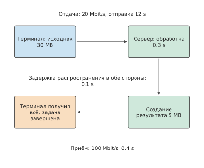
Рис. 12-1. Исходное изображение передаётся на сервер по восходящему каналу, после полной загрузки обрабатывается и целиком возвращается по нисходящему каналу. Сплошные стрелки показывают порядок передачи данных и обработки; соединение уже установлено, суммарное время распространения в обе стороны составляет 0,1 s.
При построении модели сначала следует различить время, необходимое для каждого этапа, и время завершения задачи. Деление размера файла на скорость передачи даёт время, необходимое для его отправки; время вычислений модели определяется объёмом вычислений и скоростью выполнения процессора. Если этапы выполняются последовательно, общее время равно сумме их длительностей. Если некоторые этапы выполняются одновременно, по зависимостям между ними нужно определить, когда завершится последний этап.
Прежде чем записать эти зависимости в виде формул, зададим упрощающие условия примера: время прохождения сигнала туда и обратно (round-trip time, RTT) считается равным времени распространения в обе стороны, а затраты времени на очереди и обработку протокола отдельно рассматриваются в разделе 12.3. Соединение уже установлено; сервер начинает обработку после полного получения исходного изображения и отправляет пользователю готовое изображение только после его полного формирования; полезная нагрузка передаётся по восходящему и нисходящему каналам с постоянной скоростью. Пусть размер входных данных равен \(S_u\) bytes, выходных — \(S_d\) bytes, скорости восходящего и нисходящего каналов — \(B_u,B_d\) bytes/s, RTT равен \(R\), а время обработки — \(T_c\). Тогда время последовательного выполнения равно
После того как последний байт загружаемого файла покинет отправителя, он ещё должен дойти до сервера; готовое изображение при возврате также один раз проходит путь распространения. Суммарное время двух однонаправленных распространений равно \(R\). Время распространения определяется маршрутом, а время отправки — размером файла и скоростью, поэтому уменьшение файла сокращает только время отправки. Здесь \(B_u,B_d\) обозначают скорости передачи полезной нагрузки; запуск соединения и ожидание обратной связи будут отдельно учтены в разделе 12.3.
Пример: как время загрузки изображения для ретуширования ограничивает выигрыш от ускорения модели? Скорость восходящего канала — 20 Mbit/s, нисходящего — 100 Mbit/s, \(R=0.1\) s, \(T_c=0.3\) s. В этой главе MB и Mbit используются в десятичном исчислении; MiB равен \(2^{20}\) bytes. После подстановки получаем
Загрузка занимает 12 секунд, то есть около 94% общего времени. Десятикратное ускорение этапа обработки сокращает время выполнения до 12,53 секунды, экономя лишь 0,27 секунды. Даже при мгновенной обработке загрузка, распространение и скачивание всё равно займут 12,5 секунды. Именно это ограничение описывает закон Амдала: этап обработки занимает лишь около 2,3% общего времени, поэтому даже полное устранение этих затрат сокращает общее время всего примерно на 2,3%.
Ускорение модели даёт ограниченную экономию времени; другой путь — сократить передачу. Если повысить скорость восходящего канала до 100 Mbit/s, загрузка займёт 2,4 секунды, а вся задача — только 3,2 секунды, то есть выполнится в четыре раза быстрее. Другой вариант — сохранить прежнюю скорость восходящего канала, но сжать входные данные. Предположим, сжатие без потерь уменьшает входные данные вдвое, а дополнительные кодирование и декодирование вместе занимают 0,15 секунды. Тогда отправка займёт только 6 секунд, а вся задача — около 7,0 секунды. Сжатие выгодно, поскольку 0,15 секунды дополнительных затрат на кодирование и декодирование экономят 6 секунд передачи.
Пусть размер сжатых входных данных равен \(S'_u\), а дополнительное время кодирования и декодирования — \(T_e\). Тогда общее время, сэкономленное благодаря сжатию, равно
Приравняв выигрыш в этой формуле к нулю, можно найти скорость восходящего канала, при которой сжатие перестаёт экономить время. При скорости восходящего канала 20 Mbit/s передача на 15 MB меньше экономит 6 секунд; при 100 Mbit/s — 1,2 секунды; при 800 Mbit/s — лишь 0,15 секунды, и выигрыш становится нулевым. Объём вычислений одного и того же метода сжатия не меняется; меняется время, необходимое для отправки этих байтов. Эта зависимость показана на рис. 12-2.
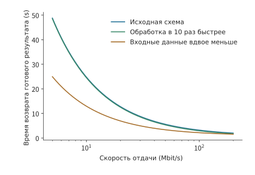
Рис. 12-2. Влияние сжатия и ускорения вычислений на время завершения задачи зависит от скорости восходящего канала. В этом примере используются исходное изображение размером 30 MB, готовое изображение размером 5 MB, нисходящий канал 100 Mbit/s, RTT 0,1 секунды и исходное время обработки 0,3 секунды; вариант со сжатием уменьшает входные данные вдвое и добавляет 0,15 секунды на кодирование и декодирование. Качество готового изображения во всех трёх вариантах одинаково, соединение уже установлено, а этапы выполняются последовательно.
Теперь рассмотрим возможность перекрытия этапов. Предположим, исходное изображение можно разделить на три независимо обрабатываемых блока. Загрузка каждого блока занимает 4 секунды, а обработка — 0,1 секунды; размеры трёх выходных блоков равны 1, 2 и 2 MB, поэтому их обратная передача последовательно занимает 0,08, 0,16 и 0,16 секунды. После поступления первого блока на сервер его обработка и обратная передача могут перекрываться с загрузкой второго блока; то же относится ко второму блоку. Отправка последнего блока всё равно завершается только на 12-й секунде, после чего ещё требуются обработка, обратная передача и распространение, поэтому пользователь получает полное готовое изображение примерно через 12,4 секунды. По сравнению с исходными 12,8 секунды обработка и обратная передача первых двух блоков завершаются во время загрузки последующих и больше не увеличивают ожидание; однако суммарные 12 секунд загрузки сократить невозможно.8
На рис. 12-3 и 12-4 два варианта сравниваются на одной шкале времени.
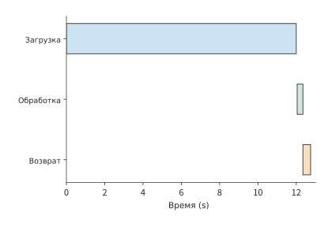
Рис. 12-3. Последовательная обработка целого изображения: обработка начинается только после загрузки всех 30 MB и распространения данных до сервера, после чего обратно передаются 5 MB. Скорость восходящего канала — 20 Mbit/s, нисходящего — 100 Mbit/s, однонаправленное распространение занимает 0,05 s; задача завершается через 12,8 s.
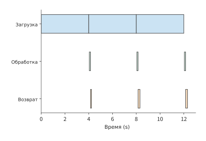
Рис. 12-4. Три блока загружаются по 4 s каждый, после поступления каждый независимо обрабатывается 0,1 s, а затем обратно передаются блоки размером 1, 2 и 2 MB. Обработка и обратная передача первых двух блоков перекрываются с загрузкой последующих; полное готовое изображение возвращается через 12,36 s.
Если для обработки требуется глобальная экспозиция или информация из других блоков, она может начаться только после поступления всего изображения. В этом случае даже при передаче по блокам вся задача по-прежнему занимает 12,8 секунды. Объём вычислений и данных определяет время отдельных этапов, а зависимости — возможность их одновременного выполнения. Сервис обработки речи в реальном времени непрерывно принимает, обрабатывает и воспроизводит аудио, поэтому такие зависимости удобнее описывать конвейером.
12.1.2 Речь в реальном времени¶
Автоматическое распознавание речи (ASR) преобразует аудио в текст, а синтез речи (TTS) — текст в воспроизводимое аудио. Потоковый сервис может формировать результат одновременно с приёмом входных данных. Например, при TTS пользователь может начать прослушивание до завершения генерации всего аудиофрагмента. Поэтому нужно знать не только момент окончания синтеза всего фрагмента, но и момент начала воспроизведения первого отрезка, а также непрерывность последующего воспроизведения.
Чтобы вычислить эти моменты, сначала запишем конвейер в виде рекуррентных соотношений для отдельных блоков. Рассмотрим конвейер обработки аудио, в котором каждому входному блоку соответствует один выходной. Устройство захвата каждые 20 ms формирует блок аудио, модель обрабатывает его и отправляет результат, а проигрыватель воспроизводит блоки по порядку. Входной блок \(i\) готов в момент \(a_i\), обработка моделью занимает \(m_i\), отправка — \(s_i\), а однонаправленное распространение — \(d_i\). Если процессор обрабатывает аудио блок за блоком, а сетевой интерфейс так же последовательно отправляет результаты, то
Здесь \(c_i\), \(u_i\) и \(r_i\) обозначают соответственно моменты завершения обработки, завершения отправки и поступления. Первый максимум означает, что для обработки текущего блока нужно дождаться как готовности входных данных, так и завершения обработки предыдущего блока. Второй максимум означает, что для отправки текущего блока нужно дождаться как завершения вычислений, так и освобождения исходящего канала. Эти два ожидания обусловлены соответственно зависимостью данных и конкуренцией за ресурс.
Пример: почему колебания сетевой задержки могут исчерпать буфер воспроизведения аудио? Импульсно-кодовая модуляция (PCM) последовательно записывает отсчёты амплитуды аудиосигнала; 24 kHz означает 24 000 отсчётов в секунду, монофонический звук — один канал отсчётов, а 16-bit — 2 байта на отсчёт. При PCM 24 kHz, моно, 16-bit каждый блок длительностью 20 ms занимает 960 bytes. Обработка одного блока занимает 12 ms, отправка — 1 ms, а обычное время распространения — 5 ms. Захват первого блока завершается через 20 ms, блок поступает через 38 ms и после буферизации в течение 40 ms воспроизводится в момент 78 ms (рис. 12-5). Второй блок поступает в момент 58 ms и следом воспроизводится в момент 98 ms. Обработка каждого блока на 8 ms короче интервала захвата, а отправка занимает всего 1 ms, поэтому обработка и отправка успевают за скоростью захвата.
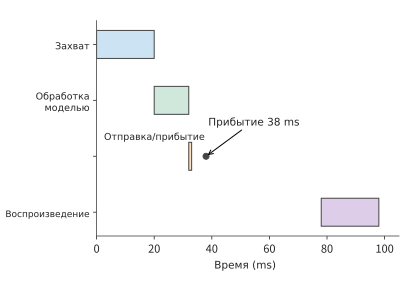
Рис. 12-5. Отсчёт времени для первого аудиоблока начинается с захвата: готов через 20 ms, обработан через 32 ms, отправлен через 33 ms, поступает через 38 ms и после начальной буферизации в течение 40 ms воспроизводится в момент 78 ms. Точками отмечено поступление, последняя строка показывает часы устройства воспроизведения.
Изменим время распространения третьего блока на 50 ms. Этот блок поступает в момент 123 ms, на 5 ms позже запланированного момента воспроизведения 118 ms. Хотя четвёртый блок поступает уже в момент 98 ms, проигрыватель должен сначала воспроизвести третий, поэтому всё последующее воспроизведение также задерживается (рис. 12-6).9
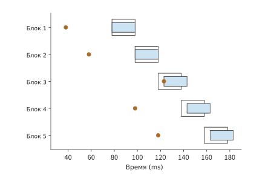
Рис. 12-6. Из-за опоздания третьего блока воспроизведение всех последующих блоков задерживается на 5 ms. Каждый блок длится 20 ms, обработка моделью занимает 12 ms, отправка — 1 ms; обычное время распространения равно 5 ms, для третьего блока — 50 ms, начальная буферизация — 40 ms. Сплошные отрезки показывают фактическое воспроизведение, светлые контуры — запланированные интервалы воспроизведения, точки — поступление; всё время отсчитывается от начала захвата первого блока. На рисунке показан результат вычисления для описанного выше конвейера: проигрыватель ожидает недостающий блок, а не отбрасывает его.
Обобщим это правило воспроизведения: пусть длительность каждого аудиоблока равна \(\tau\), а начальная буферизация — \(J\). Первый блок начинает воспроизводиться в момент \(p_0=r_0+J\), а время начала воспроизведения последующих блоков определяется соотношением
Здесь берётся максимум, поскольку проигрыватель должен дождаться как поступления текущего блока, так и завершения воспроизведения предыдущего. Когда первый аргумент больше, разность представляет собой новую паузу. Если увеличить начальную буферизацию с 40 до 45 ms, запланированный момент воспроизведения третьего блока также сдвинется до 123 ms, что позволит избежать прерывания из-за опоздания на 5 ms; цена этого — начало воспроизведения первого фрагмента на 5 ms позже. Увеличение начальной буферизации продлевает ожидание перед первым воспроизведением, но позволяет переносить более значительные колебания времени поступления и делает последующее воспроизведение непрерывнее.
Длительная нехватка пропускной способности вызывает другой тип пауз. Для удобства расчёта возьмём PCM 16 kHz, моно, 16-bit: воспроизведение требует скорости передачи данных 256 kbit/s, а 20 ms соответствуют 640 bytes. Если сеть длительное время может передавать аудио лишь со скоростью 130 kbit/s, объём буфера каждую секунду уменьшается на 126 kbit. Начальный буфер с 60 ms аудио содержит 15 360 bits и будет исчерпан примерно за \(15360/(256000-130000)\approx0.12\) секунды.
Если изобразить объём ещё не воспроизведённых данных в виде убывающей со временем кривой, станет видно различие между кратковременными колебаниями задержки и длительной нехваткой скорости передачи. На рис. 12-7 увеличение буфера лишь поднимает начальную точку, не меняя наклона.
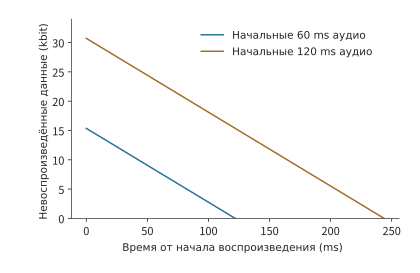
Рис. 12-7. Объём буфера равен начальному объёму данных плюс совокупный объём принятых данных минус совокупный объём воспроизведённых данных. Для воспроизведения PCM требуется 256 kbit/s, а скорость приёма составляет лишь 130 kbit/s, поэтому скорость уменьшения на обеих прямых равна 126 kbit/s. Начальные буферы содержат соответственно 60 ms и 120 ms аудио и исчерпываются примерно через 0,12 и 0,24 секунды; каждая линия показана до момента первого исчерпания.
Увеличение буфера лишь пропорционально отодвигает момент его исчерпания. Чтобы принимаемых данных хватало для воспроизведения, нужно повысить скорость передачи или снизить битрейт аудио. Буфер смягчает влияние кратковременных колебаний задержки на воспроизведение, тогда как длительная нехватка скорости передачи требует увеличить пропускную способность или уменьшить объём данных.
12.1.3 Computer Use: выполнение задач через интерфейс¶
Computer Use (управление интерфейсом компьютера) позволяет программе выполнять задачи подобно пользователю — с помощью снимков экрана, щелчков и ввода. Программа циклически наблюдает интерфейс, получает решение модели, выполняет действие и снова наблюдает интерфейс. Ключевое отличие таких задач от аудиоконвейера состоит в том, что следующий актуальный снимок экрана можно получить только после завершения предыдущего действия и обновления интерфейса. Пока модель не решила, куда щёлкнуть, невозможно получить интерфейс после щелчка. Поэтому ожидание в каждом раунде многократно накапливается в течение задачи.
Обратная стрелка на рис. 12-8 показывает, почему эту задачу трудно выполнять с поблочным перекрытием, как аудио: последующая работа должна ожидать появления нового интерфейса в результате действия.
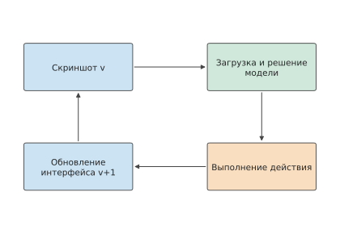
Рис. 12-8. Один раунд работы AI-агента со снимками экрана. Стрелки показывают зависимости очерёдности, ширина прямоугольников не отражает длительность. Чтобы получить снимок экрана для следующего раунда, нижняя обратная стрелка должна пройти через выполнение действия и обновление интерфейса.
Рассмотрим задачу, требующую 30 раундов действий. При использовании исходного сервиса в каждом раунде загружается снимок экрана размером 0,8 MB; при скорости восходящего канала 6,4 Mbit/s загрузка занимает 1 секунду. Наблюдение на терминале, действие и обновление интерфейса вместе занимают 0,3 секунды, удалённая модель — 2,0 секунды, распространение туда и обратно — 0,2 секунды. Соединение уже установлено, время отправки управляющего ответа считается нулевым. Один раунд занимает \(1+0.3+2.0+0.2=3.5\) секунды, а 30 раундов — 105 секунд.
Пример: компенсирует ли сэкономленное благодаря сжатию снимков время передачи дополнительные раунды действий? Если сжать снимок экрана до 0,2 MB, затратив дополнительные 30 ms на кодирование, время загрузки сократится до 0,25 секунды, а остальная работа по-прежнему будет занимать 2,5 секунды. Тогда
Каждый раунд становится короче на 0,72 секунды, а экономия за 30 раундов составляет 21,6 секунды, сокращая время задачи со 105 примерно до 83 секунд.
Сжатие также может изменить число раундов действий. Если из-за размытия текста агенту придётся выполнять дополнительные исправляющие действия, общее время после сжатия следует записать как \(2.78N'\), где \(N'\) — фактически необходимое число раундов. Из \(2.78N'<105\) следует \(N'<37.8\), поэтому максимальное число раундов, при котором задача всё ещё выполняется быстрее, равно 37; 38 раундов займут около 106 секунд. Качество изображения после сжатия влияет на число исправлений. В этой задаче допустимо добавить не более семи раундов действий; при большем числе время исправлений сведёт на нет экономию от сжатия.
Версия снимка экрана также непосредственно влияет на число раундов. Предположим, модель получила версию \(v\), после чего интерфейс изменился. Тогда действие, выбранное по устаревшему снимку, может оказаться ошибочным, из-за чего придётся восстанавливать интерфейс и делать новый снимок. Если связать версию снимка экрана с номером действия и поручить терминалу повторно снимать экран при изменении интерфейса, такой бесполезной работы можно избежать.10
В разделе 12.5 анализ этой задачи со снимками экрана будет продолжен: первые десять раундов уже завершены, а для оставшихся двадцати нужно выбрать место выполнения. Размер снимка экрана, работа терминала и параметры исходного маршрута останутся неизменными, чтобы сравнить, насколько более быстрый сервис модели сокращает время.
12.1.4 Предварительное сравнение локального устройства, близлежащего устройства и облака¶
Анализ из разделов 12.1.1–12.1.3 можно свести к трём уровням, каждому из которых соответствует свой объект вычисления:
| Уровень анализа | Объект вычисления | Полученный вывод |
|---|---|---|
| Длительность отдельных этапов | Сколько занимают вычисления, отправка и распространение | Загрузка исходного изображения занимает 12 секунд, работа модели — 0,3 секунды |
| Зависимости выполнения | Какие работы могут перекрываться, а какие должны ожидать | Независимые блоки изображения могут обрабатываться с перекрытием, а снимок экрана для следующего раунда должен ждать завершения предыдущего действия |
| Фактическое выполнение | Когда после готовности данных начинаются вычисления и отправка | Даже при достаточной средней скорости передачи аудио одно опоздание всё равно может вызвать паузу |
Сначала по длительности этапов и зависимостям между ними следует определить, может ли удалённое выполнение быть быстрее. При передаче всей задачи удалённому сервису экономия времени вычислений должна превышать дополнительные затраты на загрузку, скачивание, распространение, ожидание в очереди и подготовку. В многораундовой задаче подготовка выполняется только один раз, а обмен данными происходит в каждом раунде; при непрерывном воспроизведении аудио также нужно обеспечить своевременное поступление данных. Место размещения модели одновременно меняет время вычислений, обмена данными и подготовки.
Минимальное время распространения позволяет заранее исключить слишком удалённые серверы. Свет распространяется по оптоволокну примерно со скоростью \(2\times10^8\) m/s, поэтому при однонаправленном маршруте длиной 10 000 km распространение туда и обратно занимает не менее примерно 100 ms. Если удалённый ответ должен поступить за 50 ms, уже одно распространение превышает этот предел. Использование более близкого сервера непосредственно сокращает эту часть ожидания.
В приведённом сравнении конечное устройство рассматривается как единое место выполнения и вычисляется лишь разница во времени между ним и удалённой системой; скорость вычислений самого конечного устройства и доступная ему ёмкость пока не раскрыты. В разделе 12.1.5 сначала количественно анализируются вычислительные ресурсы конечного устройства, а в разделе 12.2 определяется, что именно передавать: при передаче всей задачи удалённой системе отправляется изображение, после кодирования на конечном устройстве — признаки, а при переносе сеанса — состояние. С изменением объекта передачи меняются объём данных и необходимое время.
12.1.5 Вычислительные ресурсы конечного устройства и локальное развёртывание¶
При сравнении вариантов развёртывания в разделе 12.5 используется значение «2,9 секунды вычислений модели на конечном устройстве за раунд». Чтобы объяснить происхождение этого значения и условия его применимости, нужно количественно проанализировать конечное устройство как вычислительный ресурс: пропускная способность памяти определяет минимальное время генерации одного токена, объём памяти — допустимую модель и длину оставшегося контекста, а энергопотребление и аккумулятор — продолжительность непрерывной работы.
Смартфон как вычислительный ресурс: пропускная способность сначала задаёт верхний предел числа токенов в секунду. В SoC флагманских смартфонов используется память LPDDR5X — стандарт энергоэффективной DRAM для мобильных устройств, включая смартфоны. В описании Snapdragon 8 Elite указаны максимальная частота 5 300 MHz и максимальный объём 24 GB, но не указана ширина шины; LPDDR5X передаёт данные дважды за такт, поэтому 5 300 MHz соответствуют 10,6 Gbit/s на вывод, что немного ниже максимального скоростного режима устройств LPDDR5X — 10,7 Gbit/s; стандартное устройство JEDEC имеет один канал x16.1 При поддерживаемой SoC скорости пропускная способность одного канала x16 равна \(16\times10.6/8=21.2\) GB/s; для четырёх каналов x16 суммарно получается 84,8 GB/s.2
При заданной пропускной способности длительность каждого шага зависит от объёма читаемых на этом шаге данных. В качестве фиксированной нагрузки используется пример из раздела 4.8.2: Qwen3-8B, BF16, один запрос, контекст 8K. Один шаг decode считывает 15,14 GB весов и 1,21 GB KV, всего около 16,345 GB.2 Одно только чтение весов занимает
то есть верхний предел decode составляет около 5,6 token/s; с учётом KV один шаг занимает около 0,193 s, а верхний предел — примерно 5,2 token/s. Квантование непосредственно сокращает число байтов, считываемых на каждом шаге: в групповом формате q4_0 из раздела 8.4 каждые 32 значения BF16 вместо 64 bytes занимают 18 bytes, поэтому объём считываемых на каждом шаге весов уменьшается примерно до \(15.14\times18/64\approx4.26\) GB, суммарный объём на шаг — примерно до 5,47 GB, время шага — до 64,4 ms, а верхний предел — примерно до 15,5 token/s. В MELTing Point на iPhone 14 Pro были измерены 14,8 token/s для Zephyr-3B q4_k и 6,0 token/s для Llama-2 7B q3_k (q4_k и q3_k — 4-битный и 3-битный форматы группового квантования семейства GGML, к которому также относится Q2_K из раздела 8.4.1), что соответствует полученному здесь порядку величин.3
Ёмкость определяет, какую модель можно разместить и сколько контекста оставить. Воспользуемся формулой ёмкости из раздела 2.6.2: из доступной памяти вычитаются веса и фиксированный резерв, после чего остаток делится на размер состояния одного запроса. Для памяти смартфона возьмём варианты Micron LPDDR5X объёмом 6, 12 и 24 GB и добавим распространённый во флагманских смартфонах вариант 16 GB; для системы и рабочего пространства зарезервируем 4 GB.1 Веса Qwen3-8B в BF16 занимают в сумме 16,38 GB, что примерно на 1,24 GB больше считываемых на каждом шаге 15,14 GB из-за таблицы вложений слов: на каждом шаге decode для токена считывается лишь одна строка, но вся таблица должна постоянно находиться в памяти. По объёму постоянного размещения модель помещается только в вариант с 24 GB, где после вычета резерва остаётся около 3,62 GB — достаточно лишь для двух запросов с контекстом 8K. После квантования до q4_0 веса занимают около 4,61 GB:
| Память смартфона | После вычета резерва и 4,61 GB весов | Допустимые запросы и контекст |
|---|---|---|
| 6 GB | Около −2,61 GB | Модель 8B не помещается; модель класса 3B в q4 занимает около 1,7 GB и помещается |
| 12 GB | Около 3,39 GB | Два запроса с контекстом 8K или один примерно с 23 тыс. токенов |
| 16 GB | Около 7,39 GB | Шесть запросов с контекстом 8K или один примерно с 50 тыс. токенов |
| 24 GB | Около 15,39 GB | Двенадцать запросов с контекстом 8K или один примерно со 104 тыс. токенов |
BF16 KV для одного запроса с контекстом 8K занимает 1,21 GB, или 147 456 bytes на токен, и линейно растёт с длиной контекста; после размещения модели оставшаяся память непосредственно определяет длину контекста. Вариант с 16 GB также является пороговым для 8-битного квантования: веса q8_0 занимают около 8,70 GB, после вычета резерва остаётся примерно 3,30 GB, чего достаточно для двух запросов с контекстом 8K; смартфоны с меньшим объёмом памяти не могут вместить 8-битную модель 8B.
Энергопотребление и автономность — специфическая цена выполнения на конечном устройстве. Разбивка энергопотребления из раздела 4.1.3 даёт для одного запроса с контекстом 8K на H100 оценку порядка 0,534 J на токен decode, включающую только перемещение данных и матричные вычисления. Измерения на смартфоне охватывают энергопотребление всего устройства: MELTing Point получил 0,16–0,21 mWh на токен, то есть 0,576–0,756 J; длительно поддерживаемая мощность достигала 13,8 W, а мгновенная превышала 18 W. Измеренные значения пропускной способности и энергопотребления можно взаимно проверить: 14,8 token/s, умноженные на 0,576 J на токен, дают около 8,5 W, что не превышает длительно поддерживаемую мощность 13,8 W. Согласно расчёту по этим измерениям, одного заряда хватает, чтобы выполнить инференс примерно для 490–590 промптов.3 Таким образом, цена выполнения на конечном устройстве заключается не только во времени и стоимости: скорость непрерывной генерации ограничена пределом мощности, а совокупный объём работы — ёмкостью аккумулятора.
Три класса устройств для локального развёртывания. Характеристики двух классов выше смартфона можно непосредственно взять из раздела 4.8.2, где для той же модели уже приведены нижние границы времени decode и prefill на 11 устройствах-кандидатах: M3 Ultra имеет унифицированную память с пропускной способностью 819 GB/s и объёмом 256/512 GB, нижняя граница чтения на шаг составляет 19,96 ms, или около 50,1 token/s, а объёма достаточно для размещения 4-битной MoE-модели 235B (раздел 4.6.3); RTX PRO 6000 имеет пропускную способность 1 792 GB/s и объём 96 GB, время одного шага — 9,12 ms, или около 109,6 token/s. На рис. 12-9 устройства трёх классов показаны на одной шкале времени.
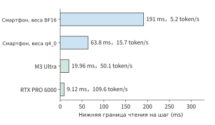
Рис. 12-9. Нижняя граница времени чтения основной нагрузки (16,345 GB) одного шага decode Qwen3-8B для одного запроса с контекстом 8K на трёх классах локальных устройств. Для смартфона предполагаются четыре канала x16 LPDDR5X с суммарной пропускной способностью 84,8 GB/s; веса BF16 и q4_0 показаны отдельными строками. M3 Ultra и RTX PRO 6000 взяты из таблицы устройств в разделе 4.8.2. На концах столбцов указан соответствующий верхний предел token/s.
Каждая среда выполнения решает свой уровень задач. Устройство задаёт нижние границы пропускной способности и ёмкости, но фактическое выполнение также зависит от среды выполнения. llama.cpp определяет хранение весов и поблочное выполнение: схема группового квантования GGUF (формат файлов моделей, используемый llama.cpp) определяет объём после загрузки и объём чтения на каждом шаге; в разделе 8.4.1 уже вычислено, что в Q2_K каждая группа занимает 84 bytes, в среднем 2,625 bit на значение. Ollama решает задачи распространения модели и оболочки локального сервиса: в соответствии с компромиссом «однократная подготовка, многократное повторное использование» из раздела 12.2.3 Ollama сокращает время подготовки к развёртыванию, а не время выполнения одного шага. MLX предназначен для унифицированной памяти Apple (раздел 4.6.3): CPU и GPU используют один пул памяти, что устраняет копирование данных между ними, а максимальный объём модели определяется памятью всего устройства. Unsloth предназначен для дообучения на конечных устройствах и одной видеокарте: он позволяет вместить бюджет состояния обучения в одну карту или одно устройство, при этом форматы квантования по-прежнему берутся из раздела 8.4. Ни одна из этих четырёх сред выполнения не меняет выведенные выше нижние границы пропускной способности и ёмкости; они лишь определяют, насколько фактическое выполнение способно приблизиться к этим границам. Единая мера этого расстояния — отношение измеренного времени к нижней границе. В разделе 12.5.2 на основе результатов эксперимента 8-1 будет показано, что измеренное время одного шага decode на RTX PRO 6000 в 2,83 раза превышает нижнюю границу чтения; основная часть разницы приходится на фиксированные затраты каждого шага. По критерию из раздела 1.3.4 это устранимые системные издержки, а не недостаток возможностей устройства.
Экономию ёмкости от Unsloth можно непосредственно вычислить по числу байтов на параметр из раздела 10.1.2. Полное обучение всех параметров с Adam в смешанной точности требует 16 bytes на параметр: веса и градиенты BF16 занимают по 2 bytes, а основные веса FP32 и два момента — по 4 bytes. LoRA замораживает базовые веса и сохраняет градиенты и состояние оптимизатора только для добавленного низкорангового adapter: adapter Qwen3-8B для проекций Q и V с rank-16 в BF16 занимает 14,6 MiB (пример с несколькими LoRA в конце главы 8), что соответствует примерно 7,65 млн параметров. Веса, градиенты, основные веса и два момента adapter суммарно занимают 16 bytes на параметр, или около 0,12 GB; вместе с базовыми весами BF16 объёмом 16,38 GB получается около 16,5 GB. Ниже сравнивается только постоянно размещённое состояние, без активаций и временных буферов:
| Видеопамять | Полное обучение всех параметров с Adam в смешанной точности, 16 bytes/параметр | Базовые веса BF16 + LoRA Q/V с rank-16 |
|---|---|---|
| 24 GB (RTX 4090) | Около 1,5B параметров | Около 12B параметров; Qwen3-8B требуется около 16,5 GB |
| 96 GB (RTX PRO 6000) | Около 6B параметров | Около 48B параметров |
Одна RTX 4090 не может вместить 131,1 GB состояния для полного обучения всех параметров Qwen3-8B, но может вместить состояние для её обучения с LoRA; Unsloth сокращает именно это состояние, а не нижнюю границу пропускной способности при чтении весов на каждом шаге.
Условия переключения: когда конечного устройства достаточно, а когда необходимо облако. Три нижние границы задают по одному условию переключения. Пропускная способность: если в каждом раунде генерируется \(G\) токенов, нижняя граница времени модели на конечном устройстве равна \(G\), умноженному на время одного шага. Именно так получены «2,9 секунды вычислений модели на конечном устройстве за раунд» из раздела 12.5: при 15,5 token/s для q4_0 значение 2,9 секунды соответствует генерации около 45 токенов за раунд; при 5,2 token/s для BF16 — лишь около 15 токенов. Можно выполнить и обратный расчёт бюджета из предельного срока: при сроке 45 секунд на 20 раундов приходится по 2,25 секунды, а после вычета 0,3 секунды работы терминала остаётся около 1,95 секунды. За это время смартфон с q4_0 может сгенерировать не более примерно 30 токенов за раунд; если требуется больше, необходимо устройство с более высокой пропускной способностью или облако. Требование в 45 токенов за раунд уже превышает бюджет, поэтому вариант с конечным устройством из раздела 12.5.2 занимает 64,0 секунды и не укладывается в срок. Ёмкость: если веса вместе с необходимым контекстом превышают доступную память данного класса, этот класс непригоден — смартфон с 12 GB не может вместить модель 8B в BF16, а смартфоны как класс не могут вместить модель 235B. Энергопотребление: при непрерывной генерации ограничением становится аккумулятор; одного заряда хватает примерно на 490–590 промптов, поэтому пакетную или продолжительную генерацию следует передавать устройству с подключённым питанием. Эти три условия дополняют предварительное сравнение из раздела 12.1.4: там сравнивается время завершения разных вариантов, а здесь сначала исключаются случаи, в которых выполнение на конечном устройстве принципиально невозможно. В упражнении 12-9 по тем же формулам повторно вычисляются пределы пропускной способности, ёмкости и мощности для класса смартфонов.
Здесь используются аппаратные нижние границы, поэтому вывод о реализуемости несимметричен: если нижняя граница времени уже превышает допустимый срок, вариант определённо непригоден; если она ниже срока, это означает лишь, что вариант пока не исключён. Программные издержки, эффективная пропускная способность ниже пиковой и снижение частоты при длительной нагрузке увеличивают фактическое время, поэтому окончательное соответствие требованиям всё равно нужно проверять измерениями на целевом устройстве.
12.2 Распределение работы между устройствами¶
12.2.1 Вызов полной модели и поэтапное выполнение¶
Один и тот же снимок экрана можно сначала отправить на сервер, где сервер преобразует его в признаки для модели; либо сначала сформировать признаки на конечном устройстве, а затем отправить их на сервер. В этих двух вариантах по сети передаются уже разные объекты. Пример с изображением из раздела 12.1.1 показывает, что медленная передача файла заставляет вычисления ждать; после переноса части вычислений на конечное устройство изменяется и объект, который действительно требуется передать.
Подсеть, преобразующую изображение или аудио в числовые признаки для модели, называют энкодером. Если вся модель размещена удалённо, требуется загрузить входные данные и скачать результат; если оставить энкодер на конечном устройстве, требуется загрузить выход энкодера. Объёмы данных файла изображения и тензора признаков определяются их способами представления, поэтому предварительные вычисления на конечном устройстве не гарантируют уменьшения объёма загрузки.
Рассмотрим AI-агент для работы со снимками экрана. При сжатии изображения текстуры и повторяющиеся области представляются меньшим числом байтов; визуальный энкодер, напротив, разворачивает изображение в значения каналов каждого визуального токена, чтобы языковая модель могла их прочитать. Первое представление предназначено для компактного хранения, второе — для последующих вычислений.
Сравним два варианта: в первом изображение сначала загружается, а затем кодируется удалённо; во втором оно сначала кодируется локально, после чего загружаются признаки. Последующие вычисления языковой модели в обоих случаях одинаковы, поэтому при вычислении разности общего времени они взаимно сокращаются. Следовательно, достаточно сравнить время локального и удалённого кодирования, а также время передачи изображения и признаков.
12.2.2 Объём передачи и вычислительные затраты при кодировании на конечном устройстве¶
Сначала проследим по стрелкам на рис. 12-10 и 12-11, что именно передаётся в каждом варианте, а затем сравним объём передачи и сэкономленное время удалённых вычислений.
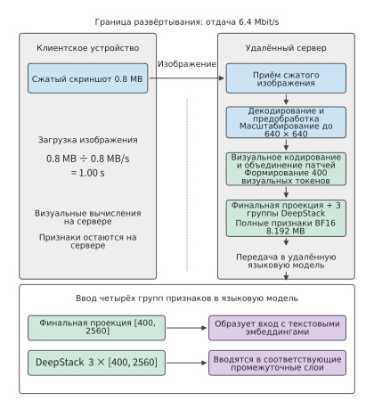
Рис. 12-10. Путь выполнения при удалённом кодировании. Конечное устройство загружает сжатый снимок экрана размером 0,8 MB, после чего удалённая сторона последовательно выполняет декодирование и предварительную обработку, визуальное кодирование и подключение признаков; итоговая проекция и три группы признаков DeepStack остаются внутри сервера. При исходящей скорости 6,4 Mbit/s передача изображения занимает 1 секунду; время кодирования и ожидания в очереди учитывается отдельно.
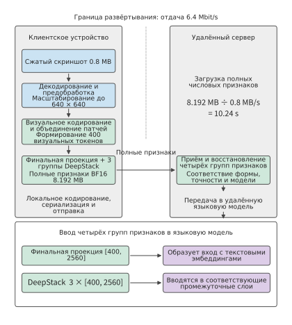
Рис. 12-11. Путь выполнения при кодировании на конечном устройстве. Предварительная обработка и визуальное кодирование переносятся на конечное устройство, а передаваемыми по сети объектами становятся итоговая проекция и полные признаки BF16 трёх групп DeepStack общим объёмом 8,192 MB; после получения удалённая сторона подключает их к языковой модели прежним способом. При той же исходящей скорости передача признаков занимает 10,24 секунды; время локального кодирования, сериализации и преобразования учитывается отдельно. Числа на рисунке соответствуют приведённой ниже фиксированной конфигурации Qwen3-VL-4B.
Пример: почему загрузка визуальных признаков может быть медленнее загрузки исходного изображения? Сохраним снимок экрана размером 0,8 MB и исходящую скорость 6,4 Mbit/s. Для визуального кодирования используется фиксированная конфигурация Qwen3-VL-4B: после предварительной обработки изображение имеет размер \(640\times640\), а после объединения блоков изображения получаются 400 визуальных токенов; здесь визуальный токен — это вектор признаков, представляющий содержимое изображения, а не текстовый токен и не отдельный пиксель исходного изображения. Каждый вектор признаков итоговой проекции содержит 2560 компонентов, кроме того, имеются три группы признаков DeepStack такой же ширины (раздел 3.3.1); выходы всех этих ветвей должны передаваться вместе. Для каждого визуального токена требуется сохранить в общей сложности \(4\times2560=10240\) чисел BF16, поэтому полный выход занимает
Четыре группы признаков подаются на разные слои языковой модели. Если передать только итоговую проекцию, три остальные группы признаков будут потеряны. Полный набор признаков занимает около 8,2 MB — примерно в десять раз больше сжатого изображения; при прежней исходящей скорости время передачи возрастает с 1 секунды приблизительно до 10,2 секунды (рис. 12-12).11
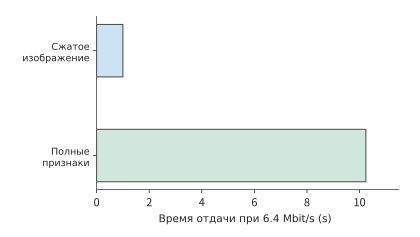
Рис. 12-12. Для передачи полных визуальных признаков одного изображения требуется больше времени, чем для сжатого изображения. Размер сжатого изображения составляет 0,8 MB; для входа 640×640 после предварительной обработки Qwen3-VL-4B формирует 400 визуальных токенов, а итоговая проекция и три группы DeepStack в сумме образуют [400,10240] BF16, всего 8,192,000 bytes. Исходящая скорость составляет 6,4 Mbit/s, длина столбца показывает время передачи; время кодирования, ожидания в очереди и преобразования учитывается отдельно. Оба варианта обрабатывают одно изображение и выполняют одну и ту же задачу визуального понимания.
Запишем это сравнение в общем виде: обозначим время локального кодирования как \(T_{E,l}\), время удалённого кодирования — как \(T_{E,r}\), а дополнительное время сериализации и преобразования в варианте с локальным кодированием — как \(T_x\). Разность времени двух вариантов равна
При \(\Delta T<0\) кодирование на конечном устройстве выполняется быстрее. Пусть конечным устройством служит настольный компьютер с RTX 4090, а удалённой стороной — H100 SXM. Кодирование одного изображения требует 1,31 TFLOPs матричных вычислений. Если исходить из пиковой производительности плотных вычислений BF16 этих устройств, равной соответственно 165,2 и 989,4 TFLOP/s, нижние оценки времени кодирования составят приблизительно 7,9 ms и 1,3 ms. При \(T_x=0\) вариант с локальным кодированием требует около 10,25 секунды, а вариант с удалённым кодированием — около 1,00 секунды. Локальный вариант медленнее и по вычислениям, и по передаче: локальные вычисления занимают примерно на 6,6 ms больше, а передача признаков — примерно на 9,2 секунды больше.12
С увеличением скорости соединения дополнительное время передачи признаков вместо изображения сокращается. Если энкодер и языковая модель размещены на двух серверах в одном центре обработки данных и соединены через порт ConnectX-7 со скоростью 400 Gbit/s (50 GB/s в каждом направлении), разница во времени передачи изображения и признаков составляет лишь около 0,15 ms, что уже меньше разницы во времени кодирования на двух указанных ускорителях. В этом случае достаточно сократить суммарное время кодирования и ожидания в очереди более чем на 0,15 ms, чтобы вариант с кодированием на другой машине стал быстрее; при прежнем медленном исходящем соединении требовалось бы сэкономить более 9 секунд. При выборе места размещения энкодера в случае медленного соединения сначала следует сравнивать объёмы передачи, а в случае быстрого соединения — прежде всего время кодирования и ожидания в очереди.
В многораундовых задачах для повторно появляющихся изображений можно повторно использовать EC, дополнительно сокращая число кодирований. Если то же изображение появляется снова, попадание в кэш устраняет одно кодирование; после изменения содержимого интерфейса изображение приходится кодировать заново. Такой же результат наблюдался в серии экспериментов на CPU с изображениями одинакового размера.13 Для вычисления суммарного времени кодирования многораундовой задачи время одного кодирования можно умножить на число промахов кэша. Таким образом, оставшийся от предыдущих раундов кэш также включается в сравнение.
Визуальные признаки позволяют исключить только визуальное кодирование. Чтобы повторно использовать результаты, уже вычисленные языковой моделью, необходимо сохранять KV, которые языковая модель послойно формирует при обработке префикса. В этой конфигурации на каждый входной токен языковой модели требуется 144 KiB логического пространства хранения KV, поэтому для 400 визуальных токенов требуется около 56,3 MiB. Изображение, визуальные признаки объёмом около 7,8 MiB и KV визуальных токенов объёмом около 56,3 MiB соответствуют разным точкам возобновления вычислений (рис. 12-13). Чем ближе к итоговому выходу модели находится кэш, тем больше вычислений экономится при повторном использовании, но тем больше может оказаться объём передаваемых данных. В разделе 12.2.3 сравнивается время однократной передачи состояния с тем, сколько времени позволит сэкономить последующее использование этого состояния.
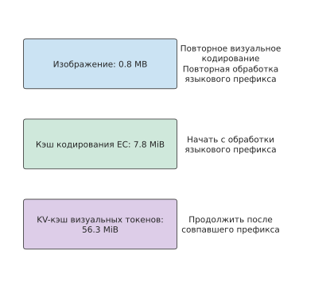
Рис. 12-13. Три типа содержимого кэша соответствуют трём точкам возобновления вычислений. EC устраняет визуальное кодирование; KV, соответствующие весам модели, префиксу и индексам позиций токенов, дополнительно устраняют вычисления языковой модели для уже обработанного префикса. Объёмы соответствуют фиксированной визуальной конфигурации из основного текста.
12.2.3 Подготовка, повторное использование и восстановление при миграции сеанса¶
При миграции сеанса кэш и ход выполнения задачи передаются на другое устройство, чтобы принимающее устройство могло продолжить выполнение. Если на целевом устройстве уже имеются совместимые веса, требуется передать кэш кодирования, языковой KV, журнал задачи и данные для восстановления. Убедившись в совместимости форматов состояния на обоих устройствах, можно сравнить время подготовки к миграции и экономию времени в каждом раунде после неё.
Обозначим необходимое для миграции время подготовки как \(M\), экономию времени на новом устройстве в каждом раунде — как \(\Delta t>0\), а число оставшихся раундов задачи — как \(N\). Разность между временем продолжения выполнения на исходном устройстве и временем выполнения после миграции на новое устройство равна
Условие \(G(N)>0\) означает, что миграция выгодна. С каждым дополнительным раундом выигрыш увеличивается на \(\Delta t\), а время подготовки \(M\) сдвигает всю кривую выигрыша вниз. Поэтому одна и та же миграция невыгодна для короткой задачи, но оправдана для длительного сеанса.
Пример: сколько ещё должно быть раундов взаимодействия, чтобы миграция состояния сэкономила время? Для миграции необходимо передать 64 MiB состояния по соединению со скоростью 80 Mbit/s, а затем потратить 1 секунду на восстановление. Общее время подготовки к миграции составляет
Если каждый раунд выполняется на 0,4 секунды быстрее, то за 10 раундов чистая потеря составит около 3,7 секунды, за 20 раундов чистая экономия — около 0,3 секунды, а за 40 раундов — около 8,3 секунды. Подставив неокруглённое значение \(M\) в условие \(N>M/0.4\), получим минимум 20 раундов. Это число раундов показывает, когда начинают окупаться затраты на миграцию, а величина чистого выигрыша — какие дополнительные затраты оправданны для такого переключения.
На рис. 12-14 в начале миграции чистая экономия отрицательна, а затем с каждым завершённым раундом увеличивается на 0,4 секунды. Число раундов до окупаемости соответствует точке пересечения кривой с нулевой линией.
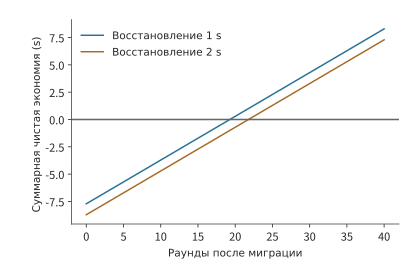
Рис. 12-14. Миграция 64 MiB состояния по соединению со скоростью 80 Mbit/s при экономии 0,4 секунды на каждом раунде после миграции. Для двух кривых время восстановления составляет соответственно 1 и 2 секунды, а чистая экономия равна N×0,4 за вычетом времени передачи и восстановления. Точками отмечены первые целые номера раундов, при которых возникает выигрыш; выше нулевой линии миграция выполняется быстрее, а первый выигрыш достигается соответственно на 20-м и 22-м раундах.
Например, если время восстановления увеличить ещё на 1 секунду, чистый выигрыш за 20 раундов сразу станет отрицательным и составит около −0,7 секунды, а число раундов до окупаемости возрастёт до 22. Если ожидается ещё 40 раундов, то даже после добавления этой 1 секунды можно сэкономить около 7,3 секунды. Поэтому системе развёртывания необходимо прогнозировать оставшуюся длительность сеанса и резервировать время на дополнительные затраты, связанные с передачей и восстановлением.
Под «временем восстановления» на кривой понимается подготовка, необходимая новому устройству перед продолжением выполнения. Помимо загрузки данных кэша в память, новое устройство должно определить, до какого шага дошло выполнение задачи. Языковой KV привязан к модели, префиксу и индексам позиций токенов; прогресс агента для работы со снимками экрана определяется уже выполненными действиями. Щелчок уже изменил интерфейс, поэтому даже при потере ответа следует восстановиться в состоянии после этого щелчка. Номер операции и журнал фиксации позволяют целевому устройству найти ранее полученный результат и продолжить со следующего раунда. Сохранение этих записей предотвращает повторное выполнение действий так же, как повторное использование кэша предотвращает повторные вычисления.
Прогрев соединения, компиляцию графа и загрузку модели также можно анализировать с помощью выражения \(N\Delta t-M\): затраты на подготовку включаются в \(M\), а сокращение времени ожидания при каждом последующем вызове — в \(\Delta t\).15 Оправданность такой подготовки зависит от того, сможет ли экономия времени при последующих вызовах компенсировать однократные затраты на подготовку.
12.2.4 Граница коммуникации при внутреннем разделении модели¶
При миграции сеанса состояние передаётся однократно — в момент смены устройства. Другой способ распределения работы состоит в том, чтобы несколько устройств постоянно совместно выполняли модель; в этом случае обмен данными многократно повторяется во время работы. При разделении модели на этапы каждый вход обычно требуется передать между соседними этапами лишь один раз; при тензорном параллелизме коммуникация необходима на каждом слое. Если вместо межсоединения ускорителей использовать локальную сеть, частая синхронизация накапливает небольшие единичные задержки, превращая их в основную статью затрат.
Рассмотрим тензорный параллелизм 36-слойной Qwen3-8B на двух устройствах (TP=2) с двумя редукциями на каждом слое — для выхода внимания и выхода FFN. Редукция суммирует локальные результаты двух устройств, чтобы последующие вычисления получили полный выход. При использовании двухэтапного кольцевого алгоритма (кольцевая реализация из главы 7, в которой сначала выполняется ReduceScatter, а затем AllGather) каждая редукция включает два запуска, причём запуск каждого этапа занимает \(\alpha\). Поэтому при генерации одного токена суммарное время запуска этих редукций равно
При \(\alpha=2\) μs эта часть занимает около 0,29 ms. Если вместо этого соединить два устройства через описанный в разделе 12.4.1 неагрегированный Wi-Fi со скоростью 54 Mbit/s, на каждом этапе потребуется выполнить как минимум один обмен короткими кадрами. Если принять указанное в том разделе время обмена короткими кадрами с ACK, равное 134 μs, то 144 запуска займут около 19,3 ms — более чем вдвое больше нижней оценки времени чтения для одного шага декодирования RTX PRO 6000, равной 9,12 ms. Даже при крайне малом объёме полезных данных запуск коммуникации всё равно занимает время; при этом следующему слою необходим результат редукции текущего слоя, а следующему авторегрессионному токену — выход текущего токена. Поскольку эти шаги должны выполняться последовательно, время запуска каждой коммуникации добавляется ко времени завершения отдельного токена.14
На рис. 12-15 и 12-16 последовательно показаны выход внимания и выход сети прямого распространения одного слоя. Каждый из них должен пройти одну редукцию по ходу выполнения, и лишь после этого можно начать следующий слой. Хотя единичное ожидание невелико, число повторений определяется структурой модели.
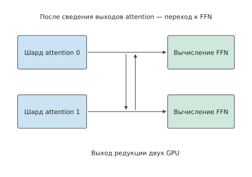
Рис. 12-15. Одна редукция выхода внимания при тензорном параллелизме: два ускорителя сначала выполняют вычисления по отдельности, затем обмениваются результатами и суммируют их, после чего полный выход передаётся в сеть прямого распространения. Горизонтальные стрелки показывают порядок выполнения, а вертикальная стрелка посередине — коммуникацию между ускорителями.
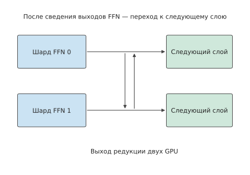
Рис. 12-16. Сеть прямого распространения также отдельно вычисляет локальные выходы, после чего выполняется редукция между двумя ускорителями. Перейти к следующему слою можно только после получения полного результата сети прямого распространения; эта структура повторяется на всех 36 слоях.
В отличие от тензорного параллелизма с послойной синхронизацией, конвейерный параллелизм разделяет слои на непрерывные этапы, а коммуникация концентрируется на передаче активаций между соседними этапами. Для одного запроса токен по-прежнему должен последовательно пройти через все этапы; при нескольких независимых запросах разные этапы могут одновременно обрабатывать разные запросы. Это даёт два вида выигрыша: сокращение числа коммуникаций может уменьшить задержку отдельного запроса, а одновременная обработка запросов разными этапами — повысить общую пропускную способность. При выборе между тензорным и конвейерным параллелизмом следует сначала построить зависимости для одного токена, а затем распределить несколько запросов по ресурсам этапов — так можно отдельно вычислить оба изменения.
После определения способа распределения модели становится ясно, что передаётся, сколько раз это передаётся и какие вычисления должны ждать завершения передачи. В разделе 12.3 рассматривается фактический процесс отправки: установлено ли соединение после подготовки данных, допускает ли окно передачу и своевременно ли возвращается подтверждение.
12.3 Дополнительные накладные расходы и ожидание при передаче по глобальной сети¶
12.3.1 Установление и повторное использование соединения¶
В разделе 12.1 предполагалось, что соединение уже установлено, а канал передаёт данные с постоянной скоростью. На практике перед выполнением запроса сначала необходимо установить соединение и контекст безопасности, то есть ключи, идентификационные данные и состояние сеанса, поддерживаемые обеими сторонами для аутентификации и шифрования; затем получить разрешённый объём отправки и, наконец, дождаться, пока получатель передаст данные приложению. Если добавить эти ожидания в модель времени из раздела 12.1, можно анализировать реальный процесс выполнения: даже когда данные уже готовы, их не всегда можно немедленно обработать или отправить.
Эти ожидания связаны со следующими протоколами. HTTP — протокол прикладного уровня, организующий запросы и ответы. HTTP/1.1 и HTTP/2 обычно используют TCP — транспортный протокол, предоставляющий надёжный упорядоченный поток байтов, — и TLS — протокол безопасности, устанавливающий контекст аутентификации и шифрования. HTTP/3 использует QUIC — протокол, обеспечивающий надёжную многопоточную передачу и управление соединениями поверх дейтаграмм UDP. UDP предоставляет приложению независимые дейтаграммы и самостоятельно не отвечает за повторную передачу и упорядочивание. QUIC объединяет транспортное рукопожатие с TLS 1.3, сокращая число циклов передачи туда и обратно, необходимых для раздельного установления транспортного соединения и контекста безопасности. При возобновлении сеанса клиент также может отправлять ранние данные, то есть данные 0-RTT, опираясь на сохранённое состояние безопасности. Если сервер принимает их, он продолжает обработку; если отклоняет, клиент отправляет их повторно. Сервер распознаёт повторную попытку по идентификатору операции и возвращает сохранённый результат, поэтому одна и та же операция не выполняется повторно.16
Подставим накладные расходы на установление соединения в задачу со снимками экрана из раздела 12.1: сохраним RTT 200 ms для задачи из 30 раундов и предположим, что установление соединения требует двух дополнительных циклов передачи туда и обратно. Повторное установление соединения в каждом раунде суммарно займёт 12 секунд, а установление только в первом раунде — 0,4 секунды, что сэкономит 11,6 секунды. Повторное использование соединения эффективно потому, что последующие 29 раундов используют состояние, созданное в первом раунде. Значение 105 секунд в разделе 12.1 было рассчитано для уже установленного соединения; с учётом первого установления получится 105,4 секунды, а при повторном установлении в каждом раунде — 117 секунд.
Установление соединения — разовые накладные расходы, тогда как передача происходит в каждом раунде. При частых запросах сохранение соединения устраняет время его установления в следующем раунде; при больших интервалах между запросами неактивное соединение продолжает занимать память и другие ресурсы. Закрытие соединения освобождает эти ресурсы, но при следующем вызове его придётся устанавливать заново. Как и при переносе сеанса, здесь необходимо сопоставить затраты на однократную подготовку с затратами на последующее многократное использование.
12.3.2 Окно, обратная связь и эффективная пропускная способность¶
Повторное использование соединения устраняет ожидание его установления, но для непрерывной отправки данных также требуется достаточно большое окно отправки. После установления соединения отправитель всё равно должен ограничивать объём данных в пути. Окно перегрузки ограничивает объём уже отправленных, но ещё не подтверждённых данных; управление потоком на стороне получателя, исходя из доступного места в его буфере, ограничивает объём данных, который отправитель ещё может передать. После получения ACK отправитель может продолжить отправку; когда получатель считывает данные из буфера, он также сообщает отправителю о появлении дополнительного свободного места. Если достигнут предел отправки, отправитель вынужден ждать этих уведомлений, даже когда канал свободен.
Объём данных в пути — это число уже отправленных, но ещё не подтверждённых байтов. Если допустимый объём данных в пути равен \(W\), а время передачи туда и обратно — \(R\), то за каждый цикл передачи туда и обратно можно передать не более приблизительно одного окна данных, поэтому
Здесь \(B_{\mathrm{path}}\) — доступная скорость передачи полезной нагрузки по пути, а \(B_{\mathrm{useful}}\) — фактическая эффективная пропускная способность. Чтобы непрерывно загружать канал передачи изображений из раздела 12.1.1 с пропускной способностью 20 Mbit/s и RTT 100 ms, требуется около 250 KB данных в пути. Если разрешённый объём составляет лишь 64 KB, верхний предел скорости равен \(64000/0.1=640000\) bytes/s, то есть около 5,1 Mbit/s, и одна только отправка этих 30 MB данных займёт не менее примерно 47 секунд. Канал мог бы передавать больше данных в секунду, но отправитель вынужден ждать следующей группы подтверждений, прежде чем продолжить; фактическую скорость передачи в этом случае можно увеличить только расширением доступного окна.
Рассмотрим отдельно модель подтверждения целой группы: получатель отправляет подтверждение лишь после получения всех 64 KB, а от завершения отправки этой группы до возвращения подтверждения всегда проходит 100 ms. Поэтому полный цикл включает 25,6 ms отправки и 100 ms обратной связи, всего 125,6 ms. На рисунке 12-17 показано это ожидание. В синие периоды действительно идёт отправка; в светлые периоды канал свободен, но отправитель не может продолжить, поскольку окно заполнено. Увеличение физической пропускной способности способно сократить только синюю часть.
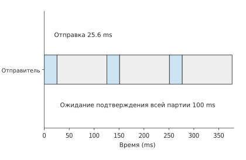
Рисунок 12-17. Фиксированное окно 64 KB, канал 20 Mbit/s, отправка одной группы данных занимает 25,6 ms. Чтобы отдельно показать остановку и ожидание, на рисунке предполагается, что получатель подтверждает всю группу после её полного получения; от завершения отправки всей группы до получения общего подтверждения проходит ещё 100 ms. Полный цикл для каждой группы занимает 125,6 ms.
На рисунке 12-17 окно зафиксировано на уровне 64 KB, чтобы показать процесс остановки и ожидания. Новое соединение обычно начинает с меньшего окна, которое постепенно увеличивается по мере поступления подтверждений; короткий запрос может завершиться до того, как окно успеет достаточно вырасти. Предположим, что начальное окно состоит из десяти сегментов по 1460 bytes и удваивается после каждого раунда обратной связи. За первые четыре раунда суммарно можно отправить \(14600(1+2+4+8)=219000\) bytes, а к пятому раунду — 452 600 bytes. Поэтому для полной отправки голосового запроса объёмом около 355 KB потребуется пятый раунд. При RTT 200 ms несколько раундов обратной связи занимают сотни миллисекунд; значительная часть времени короткого запроса может уйти на ожидание подтверждений. В разделе 12.3.5 с помощью этого механизма будет объяснено наблюдение за производительностью одного межрегионального голосового вызова.
Окно объясняет, почему отправка может приостанавливаться. Общее время запроса также зависит от фактического числа передаваемых байтов: по сети передаются не только изображения, но и заголовки пакетов и подтверждения.
Пример: как заголовки протоколов и ACK увеличивают время передачи изображений? Сохраним условия с отправкой 30 MB и получением 5 MB, примем максимальную полезную нагрузку пакета равной 1168 bytes, суммарный размер заголовков протоколов и сети — 60 bytes, а также предположим, что каждый пакет данных вызывает ACK размером 92 bytes. Всего получается около тридцати тысяч пакетов, а заголовки и подтверждения добавляют примерно \(30000\times(60+92)/10^6\approx4.6\) MB, увеличивая фактический объём передачи с 35 MB приблизительно до 39,6 MB. При попакетном расчёте моментов отправки, подтверждения и последующей отправки полный запрос занимает около 14,4 секунды.17
По сравнению с 12,8 секунды дополнительные примерно 1,6 секунды приходятся на только что добавленные в модель работу и ожидание. Однако учитывать лишь фактическое число передаваемых байтов всё равно недостаточно: ACK одновременно занимают канал и освобождают разрешённый объём для последующей отправки, поэтому уменьшение числа ACK меняет и загрузку канала, и моменты освобождения разрешённого объёма отправки.
Фактическое поведение подтверждений определяется алгоритмом управления перегрузкой. NewReno регулирует окно перегрузки на основе потерь и подтверждений; CUBIC на этапе предотвращения перегрузки регулирует окно по кубической функции времени; медленный старт — это начальный этап соединения, на котором окно быстро увеличивается по мере получения подтверждений. При одинаковом способе заполнения данными и одинаковой конфигурации NewReno замена немедленного ACK на подтверждение каждых двух пакетов с максимальным ожиданием 10 ms сокращает фактически передаваемый объём приблизительно с 39,6 MB до 38,2 MB, но увеличивает полное время запроса примерно с 14,52 до 14,56 секунды, то есть примерно на 43 ms.18 Это сравнение показывает двойную роль обратной связи: меньшее число подтверждений сокращает время передачи, но более позднее поступление подтверждений увеличивает ожидание окна. Чтобы определить, завершится ли запрос быстрее, необходимо сопоставить сэкономленное время передачи с дополнительным временем ожидания.
ACK определяет, когда отправитель сможет снова использовать окно для передачи данных, а управление перегрузкой — как будет изменяться само окно. При сравнении передачи большого изображения по одному и тому же пути полное время ответа для NewReno и CUBIC составляет около 14,5 секунды; траектория окна показывает, что CUBIC всё время остаётся на этапе медленного старта.18 Запрос завершается до перехода CUBIC к этапу предотвращения перегрузки, поэтому наблюдается поведение именно на этапе запуска.
12.3.3 Всегда ли потеря пакетов означает перегрузку¶
Окно из раздела 12.3.2 увеличивается по мере поступления подтверждений, но при потере пакетов должно сокращаться. Традиционные алгоритмы управления перегрузкой TCP не измеряют пропускную способность пути напрямую, а считают потерю пакетов сигналом перегрузки и выводят из неё доступную скорость. Модель Mathis — это формула оценки установившейся пропускной способности TCP по доле потерянных пакетов; она задаёт верхний предел скорости, которую можно получить таким косвенным расчётом:4
где MSS (maximum segment size) — максимальная полезная нагрузка одного сегмента, \(R\) — время передачи туда и обратно, а \(p\) — доля потерянных пакетов; при периодических потерях и подтверждении каждого пакета \(C=\sqrt{3/2}\approx1.22\), а при отложенных подтверждениях, когда получатель подтверждает каждые два сегмента, \(C<1\). Поэтому в формуле (4) из статьи константа опущена и приведён упрощённый верхний предел \(\mathrm{MSS}/(R\sqrt{p})\). Согласно этой формуле, пропускная способность определяется долей потерянных пакетов: если она увеличивается в четыре раза, скорость сокращается вдвое. Формула предполагает, что потеря пакетов означает перегрузку; ошибки передачи в беспроводном канале и случайные потери пакетов в межрегиональных каналах этому предположению не соответствуют.
Результаты измерений на межрегиональном канале относятся именно ко второму случаю. Журналы путей разработанной автором системы передачи по глобальной сети Queqiao («Сорочий мост», рассматривается в разделе 12.3.5) показывают путь, на котором потеря пакетов не содержит информации о перегрузке. В направлении загрузки из Irvine в Гуйян при увеличении скорости отправки с 1 до 300 Mbit/s доля потерянных пакетов стабильно составляла около 14%, а последовательные потери были независимы друг от друга; в обратном направлении, из Гуйяна в Irvine, не был потерян ни один из 41 663 пакетов, поэтому два направления одного пути вели себя как два разных пути. Минимальное и максимальное значения времени передачи туда и обратно различались лишь на несколько миллисекунд, очередей на пути не было. Доля потерь возросла до 44% лишь при увеличении скорости до 600 Mbit/s — после преодоления точки перегиба пропускной способности около 333 Mbit/s, за которой дальнейшее повышение скорости вызывает резкий рост доли потерь. Только здесь потери были вызваны перегрузкой.26 Подставив MSS 1448 bytes, \(R=0.2\) s и \(p=0.14\), по упрощённому верхнему пределу из формулы (4), где \(C=1\) и журналы путей также используют это значение, получим
а при \(C=1.22\) — 0,189 Mbit/s; оба значения согласуются с измеренными на том же пути 0,13–0,47 Mbit/s. Одна только отправка голосового запроса объёмом около 355 KB (354 640 bytes) из раздела 12.3.2 с такой скоростью заняла бы примерно 18,3 секунды. TCP не работает неправильно: он реагирует на потерю пакетов в соответствии со своими правилами, просто на этом пути потери не содержат информации о перегрузке.6 Это крайний пример первого типа расхождения, описанного в разделе 1.3.4: предпосылка модели не выполняется, поэтому рассчитанный верхний предел оказывается на три порядка ниже скорости, которую путь способен поддерживать в действительности. Исправлять нужно предположения модели, а не реализацию передачи.
BBR: прямое измерение вместо вывода из потерь. BBR (bottleneck bandwidth and round-trip propagation time, алгоритм управления перегрузкой на основе измерений) не использует потерю пакетов как сигнал, а непрерывно измеряет две величины: оценку пропускной способности узкого места BBR.max_bw — максимальное значение в окне недавних образцов скорости доставки — и оценку времени распространения туда и обратно BBR.min_rtt — минимальное значение в окне образцов RTT. Темп отправки (pacing) задаётся по измеренной пропускной способности; объём данных в пути определяется произведением пропускной способности на задержку (bandwidth-delay product, BDP), \(\mathrm{BDP}=\mathrm{max\_bw}\times\mathrm{min\_rtt}\): cwnd_gain равен 2, то есть окно перегрузки (cwnd) устанавливается равным удвоенному BDP, оставляя запас для группирования ACK и повторных передач. На этапе запуска (Startup) верхний предел пропускной способности исследуется по раундам с коэффициентом pacing \(4\ln2\approx2.77\), а на этапе ProbeBW_UP верхние значения периодически исследуются с коэффициентом 1,25.5 Подставим параметры того же пути: \(\mathrm{BDP}=333\ \mathrm{Mbit/s}\times0.2\ \mathrm{s}=8.325\) MB, окно перегрузки — 16,65 MB; идеальная эффективная пропускная способность \((1-p)\times333\approx286\) Mbit/s, что примерно в 1850 раз превышает верхний предел Mathis. На пути, где потери пакетов не содержат информации о перегрузке, скорость, полученная прямым измерением пропускной способности, на три порядка выше предела, выведенного из потерь.
Даже после точного измерения пропускной способности остаётся хвост повторных передач. BBR отвечает на вопрос «как быстро отправлять», но не на вопрос «что делать при потере». Если разделить 354 640 bytes на 245 пакетов, каждый из которых независимо теряется с вероятностью 14%, ожидаемое число потерянных пакетов составит 34,3. Ниже используется идеализированный расчёт выборочных повторных передач по раундам: в каждом раунде на повторную передачу потерянных пакетов отводится один RTT, причём повторно переданные пакеты также могут быть потеряны; сокращение окна и повторные передачи по тайм-ауту не учитываются, поэтому результат представляет собой благоприятную для TCP нижнюю границу. Последовательный бюджет без потерь равен одному RTT плюс 30 ms на модель и ещё 8,5 ms на отправку со скоростью в точке перегиба, всего около 238,5 ms; при наличии потерь ожидаемое время завершения составляет 0,756 s, что примерно в 3,2 раза больше последовательного бюджета; p99 равен 1,24 s, что соответствует шести раундам.6 Даже если BBR точно измерит пропускную способность, при высокой доле случайных потерь сохранится хвостовая задержка, вызванная повторными передачами; управление перегрузкой не может решить эту проблему.
Избыточное кодирование: получателю не нужно ждать повторной передачи. Если ожидание повторной передачи неприемлемо, можно отправить дополнительные избыточные данные, чтобы получатель самостоятельно восстановил недостающие пакеты. Прямое исправление ошибок (forward error correction, FEC) добавляет к \(k\) символам данных \(r\) восстановительных символов; в этом примере один символ соответствует одному пакету размером MSS. Если в блоке потеряно не более \(r\) символов, получатель может восстановить их напрямую без единого раунда повторной передачи. Точный расчёт по биномиальному распределению даёт минимальную избыточность для вероятности успеха 99,9%: при доле потерь 14% к 245 пакетам данных требуется 63 восстановительных пакета, то есть избыточность 25,7%; объём отправки возрастает до 308 символов, отправка занимает около 10,7 ms, а время завершения — около 241 ms, что близко к последовательному бюджету 238,5 ms (рисунок 12-18). В другой период доля потерь на том же пути составляла 3,6%: p99 повторных передач по раундам снижался до 0,84 s, а FEC требовал лишь 20 восстановительных пакетов, то есть избыточность 8,2%.6 Поэтому долю избыточности следует регулировать по измеренной доле потерь, а не сохранять неизменной. Эти значения также служат количественным обоснованием для примера Queqiao в разделе 12.3.5: прямое исправление ошибок и планирование отправки в этой системе определяют объём избыточности и темп передачи по результатам измерений пути.
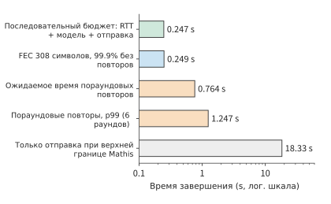
Рисунок 12-18. Время передачи 354 640 bytes тремя способами восстановления по одному пути с RTT 0,2 s, точкой перегиба пропускной способности 333 Mbit/s и долей потерь 14%; горизонтальная ось имеет логарифмический масштаб. Последовательный бюджет — сумма RTT, 30 ms работы модели и 8,5 ms отправки, около 238,5 ms; после добавления 63 восстановительных символов FEC с избыточностью 25,7% повторная передача не требуется с вероятностью 99,9%; две строки с повторными передачами по раундам показывают нижнюю границу без учёта сокращения окна и тайм-аутов; верхний предел Mathis соответствует TCP, считающему потерю пакетов признаком перегрузки, и одна только отправка занимает около 18,3 s.
12.3.4 Многопоточная передача и приоритеты¶
В предыдущих разделах рассматривалась передача одного набора данных; здесь анализируется взаимное влияние нескольких наборов данных, использующих общий исходящий канал. Когда изображения, аудио и управляющие сообщения используют один выход, можно изменить два порядка: планирование отправки определяет, чьи данные канал передаст первыми, а требования получателя к порядку данных — когда уже поступившие байты будут переданы приложению.
Сначала рассмотрим распределение ресурсов. В расчёте для группы данных, использующей общий канал, FIFO отправляет данные в порядке постановки в очередь: передача изображения завершается на пятой секунде, аудио — на шестой. При приоритете аудио его передача завершается на третьей секунде, а изображения — на шестой. Аудио завершается на 3 секунды раньше, а изображение — на 1 секунду позже, поскольку аудиоданные заранее заняли период, который прежде использовался для отправки изображения.19
Теперь рассмотрим зависимости на стороне получателя. Оставим без изменений моменты отправки и восстановления после потерь: все аудиоданные готовы на третьей секунде, а все данные изображения — лишь на седьмой. Здесь передачу полученных данных приложению будем называть доставкой. Если всё соединение использует единый порядок получения, пробел в предшествующих данных блокирует последующие, создавая блокировку начала очереди. При общей упорядоченной доставке аудио также нельзя передать приложению до седьмой секунды (рисунок 12-19); при доставке по отдельным потокам аудио передаётся приложению уже на третьей секунде, а изображение — по-прежнему на седьмой (рисунок 12-20). Эти 4 секунды экономятся благодаря тому, что аудио больше не должно ждать поступления изображения; объём отправляемых данных и скорость канала не изменяются.
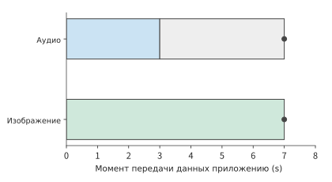
Рисунок 12-19. Общая упорядоченная доставка: все аудиоданные получены на 3-й секунде, но из-за пробела в данных изображения они продолжают ждать до 7-й секунды. Серый отрезок обозначает ожидание после получения всех данных, точка — момент их передачи приложению.
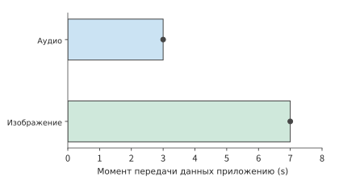
Рисунок 12-20. Упорядоченная доставка по потокам: аудио передаётся приложению сразу после полного получения на 3-й секунде, изображение — на 7-й. На обоих рисунках моменты отправки, поступления и восстановления одинаковы; различается лишь необходимость взаимного ожидания между потоками.
Различие между общей упорядоченной доставкой и доставкой по потокам точно соответствует поведению двух реальных протоколов. HTTP/2 помещает несколько потоков в единый упорядоченный поток байтов TCP, где пробел в предшествующих данных блокирует последующие байты. QUIC поддерживает порядок отдельно для каждого потока, поэтому непрерывно поступившие байты других потоков можно доставлять независимо.16 Здесь используется тот же метод анализа, что и в рекуррентном соотношении для воспроизведения аудио: одно условие ожидания, охватывающее все данные, разбивается на отдельные условия для каждого потока, и потоки, уже выполнившие своё условие, могут передавать данные приложению.
Эти два механизма отвечают соответственно на вопросы «когда отправлять» и «когда передавать приложению». В разделе 12.3.5 на примере межрегионального голосового запроса показано, как эти механизмы влияют на реальный запрос; в разделе 12.4 с учётом запланированного времени воспроизведения аудио и версии снимка экрана рассматривается, сохраняют ли данные ценность к моменту передачи приложению.20
12.3.5 Пример: как Queqiao ускоряет межрегиональные голосовые сервисы¶
В главах 8 и 9 рассматривались пакетная обработка и объединение ресурсов модельных сервисов. Если направлять запросы из разных регионов в небольшое число центров обработки данных, больше запросов сможет совместно использовать экземпляры моделей и ускорители. Это сокращает объём мощностей, которые при распределённом развёртывании пришлось бы отдельно резервировать в каждом регионе, не используя полностью, а также облегчает формирование полного batch. Поэтому централизованное развёртывание может повысить загрузку ускорителей и снизить стоимость одного запроса, но удалённым пользователям придётся передавать данные по более длинному сетевому пути. Например, если централизованно развернуть голосовую модель на востоке США, пользователям или сервисам доступа с западного побережья потребуется выполнять межрегиональные вызовы. Даже если модель в пуле ресурсов быстро завершит вычисления, пользователь всё равно будет ждать отправки запроса и возвращения результата.
Что такое Queqiao и какую проблему она решает? Queqiao имеет открытый исходный код, допускает самостоятельное развёртывание и передаёт трафик TCP и UDP между управляемым клиентом и доверенным шлюзом. Приложение подключается к клиенту через локальный прокси SOCKS5 — универсальный прокси-протокол для перенаправления произвольных соединений TCP/UDP; клиент соединяется со шлюзом через глобальную сеть, после чего шлюз передаёт запрос целевому сервису. При таком развёртывании между центрами обработки данных клиент работает на сервере вызывающей стороны, а шлюз размещается рядом с удалённым сервисом инференса, поэтому оптимизируемый дальний участок сосредоточен между клиентом и шлюзом. Приложение продолжает вызывать прежние интерфейсы ASR и TTS, а Queqiao отвечает за передачу запросов и результатов.25
README проекта описывает реальную потребность: модель работает в США, а клиенты распределены по разным регионам. ASR отправляет несколько сотен KB аудио и возвращает одну строку распознанного текста; TTS отправляет фрагмент текста и возвращает несколько сотен KB аудио. В сценарии TTS из README аудио возвращается одной группой после завершения работы модели, то есть передаётся одним всплеском; в потоковом сценарии из раздела 12.1 передача начинается после генерации первого блока, а получение и воспроизведение продолжаются параллельно с генерацией. Даже если все байты такого короткого запроса можно отправить за несколько миллисекунд, установление соединения, увеличение окна и восстановление после потерь могут по отдельности потребовать ещё одного цикла дальней обратной связи.
Цель Queqiao — сократить эти дополнительные ожидания, чтобы время коротких запросов максимально приблизилось к необходимому времени распространения, отправки данных и обработки моделью, а длинные потоки эффективнее использовали доступную пропускную способность. Queqiao позволяет нескольким потокам приложений совместно использовать результаты измерений и состояние передачи на пути клиент — шлюз, повторно использует соединения и планирует отправку и восстановление в соответствии с состоянием пути; прямое исправление ошибок добавляет некоторое количество избыточных данных, позволяя получателю восстановить недостающие пакеты без ожидания следующего раунда повторной передачи. Когда интерактивные потоки сосуществуют с большими файлами, их ожидание также необходимо контролировать с помощью планирования отправки. Рассмотренные в разделах 12.3.1–12.3.4 механизмы соединений, окон и нескольких потоков здесь совместно обслуживают межрегиональные вызовы. Само расстояние распространения по-прежнему определяет неизбежное время; пригодность централизованного развёртывания для конкретной задачи зависит от того, укладывается ли полный оптимизированный запрос в установленный бизнесом срок.
Почему межрегиональный голосовой запрос выполняется намного дольше идеальных примерно 240 миллисекунд? В этом разделе механизмы проверяются на архивных результатах голосовых тестов автора. Фактические измерения проводились на пути из Гуйяна в американский Irvine, а не на пути между востоком и западом США из приведённого выше примера развёртывания. Фиксированный аудиофайл имел объём около 355 KB, пропускная способность канала составляла 333 Mbit/s, время передачи туда и обратно — около 200 ms, а обработка моделью занимала около 30 ms; измерение начиналось при отправке запроса и завершалось после полного получения результата. Идеальное время отправки составляло около 8,5 ms, а вместе с распространением и обработкой — около 238,5 ms. Однако первоначальный прямой вызов занимал более секунды, тогда как Queqiao требовалось около трёхсот миллисекунд.
Это расхождение допускает два объяснения. Согласно первому, преимущество даёт сам механизм передачи; согласно второму, основная часть времени прямого вызова расходуется на подготовку соединения, увеличение окна и ожидание отправки. Эти объяснения дают разные прогнозы: если основная причина заключается в подготовке соединения и ожидании отправки, после полной оптимизации прямого пути время запроса должно приблизиться к рассчитанному выше минимуму, основанному на объёме данных, времени вычислений и обязательном цикле передачи туда и обратно; если же значительное преимущество по-прежнему обеспечивает сам механизм протокола, разрыв сохранится.
Для проверки прогноза сначала необходимо зафиксировать входные данные. В ранних тестах поочерёдно использовались восемь файлов объёмом 146–405 KB, но в отчёте был указан лишь размер последнего запроса — 355 KB; обозначенная этим размером медиана фактически охватывала весь диапазон. После перехода к многократной отправке одного и того же файла объёмом 354 640 bytes и чередованию двух путей каждый запрос стал передавать одинаковое число байтов.26 Зафиксировав объём данных, можно изменять конфигурацию соединения и отправки и сравнивать их влияние на время запроса.
Какой разрыв во времени остаётся между двумя путями после повторного использования и оптимизации соединения?
Ниже приведены две группы результатов для фиксированного файла.
| Условия соединения | Медиана запроса по прямому пути | Медиана запроса через Queqiao | Наблюдаемый разрыв |
|---|---|---|---|
| Новое соединение | около 1,19 s | около 0,30 s | прямой путь медленнее примерно в 3,9 раза |
| Сохранение и оптимизация соединения | около 0,24 s | около 0,24 s | результаты близки |
При новом соединении пути различаются примерно на 0,89 секунды, а после повторного использования и оптимизации соединения оба дают около 0,24 секунды (рисунки 12-21 и 12-22).27 После изменения базовой конфигурации бо́льшая часть первоначального разрыва исчезла. Это служит доводом в пользу второго объяснения: в исходном расхождении основную роль играли подготовка соединения и способ отправки. Даже при использовании одного протокола различные конфигурации могут давать значительно различающееся время выполнения запроса. Последовательность действий в этом примере соответствует разделу 1.3.4: сначала из времени распространения, отправки и обработки моделью вычисляется нижняя граница около 240 ms, затем она сравнивается с измерениями, после чего эксперимент с изменением только условий соединения позволяет определить, вызвано ли расхождение пропусками в модели или накладными расходами реализации. Здесь расхождение почти полностью обусловлено накладными расходами реализации, а сама нижняя граница верна.
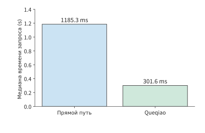
Рисунок 12-21. При новом соединении медианы запросов с фиксированным аудиофайлом объёмом 354 640 bytes по прямому пути и через Queqiao составляют соответственно 1185,3 и 301,6 ms. Измерение начинается при отправке запроса и завершается после полного получения результата; входной файл одинаков, два пути запускаются поочерёдно.
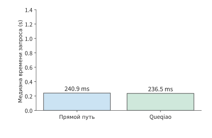
Рисунок 12-22. После сохранения и оптимизации соединения медианы для одного фиксированного аудиофайла по прямому пути и через Queqiao составляют соответственно 240,9 и 236,5 ms. Используется та же вертикальная ось, что и на предыдущем рисунке; оба пути приближаются к суммарному времени, необходимому для отправки данных, обязательного цикла передачи туда и обратно и обработки.
Как однофакторные эксперименты позволяют разделить влияние соединения, окна и темпа отправки? Повторное использование соединения определяет, требуется ли рукопожатие в начале запроса; размер окна — допустимый объём данных в пути до возвращения подтверждения; темп отправки — периоды простоя канала. На рисунке 12-23 эти три группы настроек сопоставлены с соответствующими событиями: файл, путь и остальные настройки фиксируются, в каждом эксперименте изменяется один фактор, после чего записываются моменты затрагиваемых им событий и полное время запроса. В эксперименте с соединением сравниваются моменты завершения рукопожатия и отправки первого байта, в эксперименте с окном — объём данных в пути и отправка после поступления ACK, а в эксперименте с темпом — время простоя между двумя отправками.
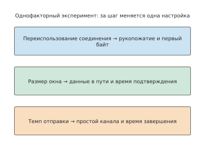
Рисунок 12-23. Метод однофакторного эксперимента: оставлять неизменными файл, путь и остальные настройки, каждый раз изменяя только один фактор, и сравнивать промежуточные события и общее время завершения.
При исчерпании окна после отправки группы данных объём данных в пути достигает предела, исходящий канал простаивает, и отправка продолжается только после возвращения ACK. Расширение окна сокращает такие периоды простоя; если запрос также завершается раньше, временная шкала отправки и подтверждений показывает, что сокращение общего времени вызвано изменением окна.
На результаты сравнения влияет и порядок проведения эксперимента. Чередование тестов двух путей позволяет запускать два сравниваемых запроса примерно в одно время, уменьшая влияние изменений сети; за тот же период RTT составлял около 197–205 ms с размахом примерно 8 ms. После оптимизации разница между медианами времени запросов по двум путям составляла около 4 ms, что меньше колебаний RTT за тот же период. В этой группе экспериментов время запроса по обоим путям уже приближалось к 240 ms.
Что выгоднее: сократить сетевую задержку передачи туда и обратно или ускорить вычисления модели? После оптимизации базового варианта сравнения меняется и приоритет следующего этапа оптимизации. Ускорение модели с 30 до 3 ms сэкономит не более 27 ms; сокращение RTT с 200 до 20 ms позволит сэкономить около 180 ms. Если дополнительная подготовка и вычисления при выполнении поблизости займут меньше этих 180 ms, такой вариант окажется быстрее исходного удалённого пути. Метод сравнения тот же, что и в разделе 12.1: сначала вычисляется, насколько замена сервера сократит ожидание, а затем вычитается дополнительное время вычислений и подготовки.
Помимо времени запроса, необходимо проверить непрерывность воспроизведения: после поступления аудио проигрыватель должен воспроизводить его без остановок. В другой группе экспериментов, использовавшей обратные вызовы устройства вывода без звука, в итоге были получены все данные PCM, однако обратные вызовы воспроизведения суммарно в течение примерно 0,36–1,44 секунды не могли получить достаточное число аудиосэмплов.28 Момент завершения запроса показывает лишь, когда поступила последняя группа данных, тогда как проигрывателю необходимо непрерывно считывать аудио ещё до этого. Полное время запроса и время остановок воспроизведения описывают две разные проблемы.
Генерация аудиоблоков, их поступление, помещение в буфер воспроизведения и считывание обратным вызовом воспроизведения образуют временную шкалу непрерывного воспроизведения. Рекуррентное соотношение из раздела 12.1 определяет момент первого опустошения буфера: если следующий блок к этому времени ещё не сгенерирован, ожидание вызвано обработкой моделью; если он сгенерирован, но ещё не поступил, — передачей; если он уже поступил, но не был считан, — локальной буферизацией и планированием.
Этот пример охватывает весь путь от оценки до решения о развёртывании: сначала рассчитывается идеальное время завершения, затем в журналах выполнения обнаруживаются ожидания, их причины объясняются однофакторными экспериментами, а в конце на основе оставшегося потенциала экономии времени выбирается дальнейшая оптимизация или замена сервера. В разделе 12.4 в анализ добавляются конкуренция, колебания и восстановление при беспроводном доступе, а в разделе 12.5 сводится полный план развёртывания.
12.4 Взаимодействие и восстановление в условиях изменчивой беспроводной связи¶
12.4.1 Общий радиоканал и конкуренция восходящего и нисходящего трафика¶
В разделе 12.3.4 различались моменты «когда отправлять» и «когда передавать приложению». Радиоинтерфейс (air interface) — это интерфейс, через который устройства обмениваются данными посредством радиосигналов. Беспроводная сеть также изменяет стоимость самой отправки: восходящие данные и нисходящая обратная связь должны поочерёдно занимать одно и то же эфирное время. При каждом обмене необходимо не только передать байты, но и дождаться освобождения канала и межкадрового интервала, а затем получить подтверждение на текущем участке. Поэтому, помимо количества байтов приложения, необходимо учитывать число обменов.
Сквозной ACK отправляется удалённому отправителю; уровень управления доступом к среде (MAC) организует передачу по отдельному беспроводному каналу, а MAC ACK подтверждает беспроводной кадр на текущем участке. Беспроводной кадр, несущий сквозной ACK, также требует собственного подтверждения MAC. Поэтому даже короткий сквозной ACK должен дождаться освобождения канала и получить подтверждение на текущем участке.
Пример: насколько велики накладные расходы на доступ к беспроводному каналу и подтверждение короткого кадра ACK? Мультиплексирование с ортогональным частотным разделением каналов (OFDM) распределяет данные по нескольким взаимно ортогональным поднесущим; PPDU — это блок данных протокола физического уровня, содержащий преамбулу, заголовок и передаваемые данные физического уровня и представляющий полное содержимое одной беспроводной передачи; SIFS — короткий межкадровый интервал между последовательными обменами. Рассмотрим эталонный обмен OFDM без агрегации: скорость передачи данных — 54 Mbit/s, скорость MAC ACK — 6 Mbit/s. Обмен пакетом включает ожидание доступа в течение 34 μs, передачу кадра данных в течение 208 μs, SIFS длительностью 16 μs и MAC ACK длительностью 44 μs — всего 302 μs. При передаче сквозного ACK длительность кадра данных сокращается до 40 μs, а остальные три составляющие остаются неизменными — всего 134 μs.21
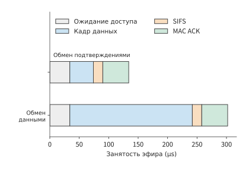
Рисунок 12-24. После сокращения сообщения фиксированные накладные расходы обмена сохраняются, поэтому время использования радиоканала не уменьшается в той же пропорции. В обоих успешных обменах используются одинаковые ожидание доступа длительностью 34 μs, SIFS длительностью 16 μs и MAC ACK длительностью 44 μs; различается только PPDU данных: 208 μs или 40 μs. Условия эталонной модели: OFDM 54/6, без агрегации и повторных передач.
На рисунке 12-24 оба обмена содержат \(34+16+44=94\) μs фиксированных накладных расходов. Время передачи кадра данных уменьшается с 208 до 40 μs, то есть примерно на 80%, однако длительность всего обмена сокращается лишь примерно на 56%. Чем больше доля фиксированных составляющих, тем меньше выигрыш от дальнейшего сокращения полезной нагрузки; более прямой способ уменьшить накладные расходы — объединять несколько небольших сообщений и сокращать число обменов.
Если по-прежнему передавать изображение объёмом 30 MB и готовый результат объёмом 5 MB, то при данной конфигурации беспроводной связи потребуется по 30 800 обменов данными и обменов обратной связью, а суммарное время использования радиоканала составит примерно
Если оставить данные и траекторию восстановления неизменными, но вдвое сократить число сквозных ACK, освободится примерно \(15400\times134\ \mathrm{\mu s}\approx2.1\) секунды эфирного времени. Как уже объяснялось в разделе 12.3.2, задержка обратной связи дополнительно увеличивает время ожидания окна. Поэтому необходимо заново вычислить моменты отправки и подтверждения каждого пакета: сокращение числа ACK освобождает эфирное время, но ожидание подтверждения может задержать последующие отправки. Оба фактора совместно определяют момент завершения всего запроса.
В реальных протоколах уже существуют механизмы, построенные по этому принципу. TACK — один из механизмов обратной связи, сокращающих накладные расходы беспроводных подтверждений. TACK отделяет обычные накопительные подтверждения от событий, требующих немедленной обратной связи: первые объединяются перед отправкой для сокращения числа обменов, а вторые возвращаются незамедлительно, чтобы отправитель мог как можно скорее продолжить передачу или повторно отправить потерянные данные.22 Такое разделение одновременно сокращает расходы на отправку сообщений подтверждения и время ожидания обратной связи.
12.4.2 Сроки обслуживания, устаревшие данные и отмена¶
Проигрыватель из раздела 12.1 ожидал недостающий блок, чтобы сохранить всё содержимое; другой вариант проигрывателя воспроизводит данные по фиксированному таймеру, а опоздавшие аудиоблоки уже не используются в предназначенных для них интервалах воспроизведения. Требования к качеству задачи определяют, какое правило воспроизведения следует выбрать.
Например, восемь аудиоблоков длительностью 20 ms каждый планируется непрерывно воспроизводить начиная с отметки 0,4 секунды, всего в течение 0,16 секунды. Когда эти аудиоданные делят канал с большим изображением, при FIFO все блоки в итоге прибывают, но каждый из них пропускает назначенный момент воспроизведения; при приоритете медиаданных все восемь блоков прибывают вовремя.23 В обоих случаях итоговое число полученных байтов одинаково, однако объём вовремя доступного звука составляет соответственно ноль и 0,16 секунды. Только подсчёт при планировании содержимого, воспроизведённого вовремя, отражает, сколько звука пользователь действительно услышал.
Опоздавшие данные пропускают предназначенный для них интервал воспроизведения, а отмена немедленно лишает ценности ещё не воспроизведённые данные. Если в очереди проигрывателя уже находятся три аудиоблока длительностью по 20 ms, то даже после прекращения генерации на удалённой стороне локальное воспроизведение может продолжаться ещё 60 ms. Если управляющему сообщению требуется 100 ms, чтобы достичь сервера, удалённая сторона успеет создать новые блоки до его получения. Поэтому процесс отмены разделяется на два параллельных пути (рисунок 12-25): локальная сторона очищает буфер ожидающих воспроизведения данных, а удалённая прекращает генерацию и отправку последующего аудио. Первый путь определяет, когда пользователь перестанет слышать звук, второй — когда прекратится потребление ресурсов.
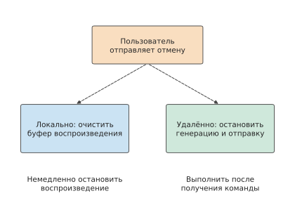
Рисунок 12-25. Одна отмена одновременно запускает два пути: локальная сторона очищает ожидающее воспроизведения аудио, а удалённая прекращает генерацию и отправку после получения управляющего сообщения. Пунктиром обозначен поток управления; локальная остановка воспроизведения и освобождение ресурсов на удалённой стороне завершаются в разные моменты.
После отмены аудио отбрасываются только ещё не воспроизведённые данные, тогда как действие агента, работающего со скриншотами, изменяет среду после отправки. При потере ответа повторная попытка должна запрашивать результат, соответствующий идентификатору исходной операции; повторный щелчок превращает повторную попытку обмена данными во вторую бизнес-операцию. Если сохранить результат операции, после восстановления сети можно продолжить работу с достигнутого состояния, не создавая повторных операций.
12.4.3 Выбор двух путей, распределение трафика и переключение при отказе¶
Предыдущий анализ учитывал только один путь доступа, однако терминал часто одновременно подключён к двум. Wi-Fi и сотовая сеть предоставляют два пути доступа. При распределении разные части данных передаются по разным путям, чтобы одновременно использовать их ресурсы; при репликации одна и та же копия данных передаётся по обоим путям, чтобы раньше получить один действительный результат. Эти методы различаются объёмом данных и условиями завершения, поэтому их следует рассчитывать отдельно.
Пример: как распределить данные изображения между двумя путями, чтобы сократить время передачи? Два независимых пути с постоянной скоростью имеют пропускную способность 20 и 10 Mbit/s соответственно. По быстрому пути передаётся доля \(x\), по медленному — оставшаяся часть. Передача завершается только после получения обеих частей, поэтому
Если один путь завершает передачу раньше, часть байтов с другого пути можно перенести на него, чтобы ускорить завершение той части, которая изначально была бы получена позже. Поэтому при оптимальном соотношении оба пути должны завершить передачу одновременно, то есть \(x=B_1/(B_1+B_2)\). Быстрый путь передаёт 20 MB, медленный — 10 MB; каждому требуется 8 секунд, что на 4 секунды меньше 12 секунд при использовании только быстрого пути (рисунок 12-26).
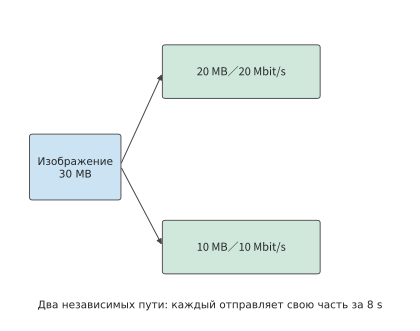
Рисунок 12-26. Два независимых пути получают входные данные пропорционально пропускной способности, передают соответственно 20 MB и 10 MB, и каждому требуется 8 s. Задача завершается после получения обеих частей.
Если оба пути сходятся в одном выходном канале с пропускной способностью 24 Mbit/s, оба пути доступа по-прежнему могут передавать одновременно и каждому требуется 8 секунд, но все данные должны пройти через этот выходной канал, поэтому передача 30 MB займёт не менее 10 секунд. Таким образом, узкое место перемещается в общий выходной канал. Дальнейшее повышение скорости доступа лишь приведёт к накоплению дополнительных данных в очереди перед этим выходным каналом.
На рисунке 12-27 два пути снова сходятся в выходном канале. Эта точка слияния не только объясняет, почему скорости двух путей доступа нельзя просто сложить, но и поднимает другой вопрос: сможет ли второй путь доступа продолжить передачу при отказе устройства, на котором расположен выходной канал.
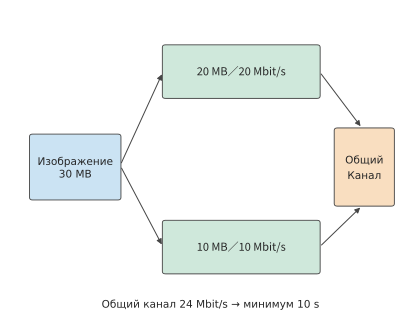
Рисунок 12-27. Изображение объёмом 30 MB разделяется на части 20/10 MB между двумя независимыми путями доступа со скоростями 20/10 Mbit/s; каждому требуется 8 секунд. Затем оба пути проходят через общий выходной канал с пропускной способностью 24 Mbit/s, поэтому прохождение всех данных через него занимает не менее 10 секунд. Стрелки обозначают пути данных, а не расстояние распространения; пропускная способность считается постоянной.
Чтобы получать те же данные даже после отключения одного пути, можно использовать репликацию и проверить, в каких точках обе копии могут отказать одновременно. Пусть вероятность отказа общего конечного узла равна \(q\); когда конечный узел исправен, отказы двух путей доступа независимы и имеют вероятности \(p_1,p_2\). Отказ включает либо отказ конечного узла, либо одновременный отказ обоих путей доступа при исправном конечном узле. Эти два взаимоисключающих события суммируются:
При \(p_1=0.1,p_2=0.05\) вероятность одновременного отказа двух путей доступа составляет 0,5%; после добавления \(q=0.02\) общая вероятность равна примерно 2,5%. Из них 2 процентных пункта напрямую обусловлены общим конечным узлом. Даже если сделать оба пути доступа абсолютно надёжными, общая вероятность отказа всё равно составит 2%; уменьшить эту составляющую можно лишь путём размещения реплик сервиса в разных доменах отказа.
После устранения общего отказа за репликацию всё равно приходится платить дополнительной пропускной способностью. Например, восемь аудиоблоков размером 640 bytes составляют 5120 bytes в одной копии, а при полной репликации — 10 240 bytes. Получатель устраняет дубликаты по номерам блоков данных: первая полностью прибывшая копия передаётся проигрывателю, а более поздняя отбрасывается. Отправка дополнительной копии данных позволяет использовать результат, первым прибывший по одному из двух путей; если оба пути используют общий выходной канал, дублирующиеся данные также занимают пропускную способность, необходимую другим задачам.24
В реальных системах распределение, репликация и точка слияния часто реализуются протоколом или прокси-сервером доступа. Многопутевой TCP (MPTCP) организует в одном логическом соединении TCP-подпотоки, проходящие по разным путям, а прокси-сервер доступа может объединять эти пути между терминалом и обычным сервером. В реализации Huawei Link Turbo для совместного использования нескольких сетей состояние разных путей доступа также учитывается при выборе способа отправки.22 Расположение прокси-сервера одновременно влияет на общую пропускную способность, распространение данных и домен отказа, поэтому он становится отдельным вычислительным и транспортным узлом модели развёртывания.
12.5 От распределения задач между устройством, периферией и облаком к полноценному развёртыванию¶
12.5.1 Регион, данные и расположение сервиса¶
Продолжим анализ задачи с 30 раундами обработки скриншотов из раздела 12.1. Первые десять раундов уже завершены, и для оставшихся двадцати нужно выбрать место выполнения; с этого момента задача должна быть завершена за 45 секунд. Независимо от выбранного варианта ранее уже затраченное время одинаково, поэтому сравнивается оставшаяся работа. Исходному сервису требуется 3,5 секунды на раунд, и продолжение выполнения заняло бы 70 секунд, поэтому необходимо выбрать другой вариант.
По-прежнему будем считать, что размер скриншота в каждом раунде равен 0,8 MB, работа терминала занимает 0,3 секунды, скорость исходящего канала по прежнему облачному маршруту составляет 6,4 Mbit/s, а RTT — 0,2 секунды. Сравним три места выполнения: на устройстве используется телефон из раздела 12.1.5, на близлежащей рабочей станции установлена RTX PRO 6000 Blackwell Workstation Edition, а в облачном регионе используется H100 SXM. Во всех трёх местах используется один и тот же набор весов Qwen3-8B q4_0 с контекстом 8K, и в каждом раунде генерируются 45 токенов, как в разделе 12.1.5, поэтому качество задачи одинаково. Время работы модели на раунд рассчитывается по методике раздела 12.1.5 с использованием нижней границы времени чтения при декодировании: выполняется 45 шагов, на каждом из которых считывается 5,47 GB, а суммарный объём чтения делится на пропускную способность памяти устройства. Когда новый сервис принимает задачу, он сначала должен выполнить один prefill для контекста 8K, оставшегося после первых десяти раундов; в таблице это указано как «однократная подготовка» и рассчитывается делением объёма матричных вычислений 133,6 TFLOPs на пиковую производительность плотных вычислений BF16. Для телефона нет значения пиковой матричной производительности, на которое можно сослаться, поэтому время подготовки принимается равным 0; такое допущение лишь делает выполнение на устройстве более быстрым. Сначала предполагается отсутствие очередей и сбоев, а время отправки управляющего ответа принимается равным нулю.31
| Место выполнения | Устройство | Однократная подготовка | Модель на раунд | Исходящий канал | Распространение туда и обратно на раунд | Место назначения скриншота | Энергопотребление за 20 раундов |
|---|---|---|---|---|---|---|---|
| На устройстве | Телефон, 84,8 GB/s | 0 s | 2,90 s | Загрузка не требуется | 0 s | Остаётся на устройстве | 518–680 J |
| Близлежащая рабочая станция | RTX PRO 6000, 1 792 GB/s, 600 W | 0,27 s | 0,137 s | 80 Mbit/s | 0,02 s | Передаётся на близлежащую рабочую станцию | Около 1,81 kJ |
| Облачный регион | H100 SXM, 3 350 GB/s, 700 W | 0,14 s | 0,073 s | 6,4 Mbit/s | 0,20 s | Передаётся в облачный регион | Около 1,12 kJ |
Стоимость измеряется энергопотреблением. Для обеих GPU номинальная мощность платы умножается на время занятости, которое равно сумме однократной подготовки и вычислений модели за двадцать раундов; поскольку номинальная мощность является верхней границей, значения в этих двух строках также представляют собой верхние границы. Для телефона используется измеренное в MELTing Point энергопотребление 0,576–0,756 J на токен; за двадцать раундов генерируется 900 токенов.3 Энергия сети, затрачиваемая на передачу и распространение, не учитывается.
До сравнения времени и стоимости необходимо выполнить ограничение на резидентность данных (data residency): данные могут храниться и обрабатываться только на разрешённом устройстве или в разрешённом регионе. В строке выполнения на устройстве исходные скриншоты всегда остаются на нём; при использовании близлежащей рабочей станции или облачного региона исходный скриншот размером 0,8 MB в каждом раунде передаётся за пределы устройства. Если скриншоты содержат данные, которым запрещено покидать устройство или пересекать границу страны, эти два варианта исключаются ещё до начала сравнения; дальнейшее сравнение сроков и стоимости предполагает, что передача разрешена.
После разделения облака на разные регионы по-прежнему необходимо сравнивать эти значения времени и стоимости. При использовании сервиса Regionless, в котором облачный регион для запроса выбирает платформа, а приложение не привязано к фиксированному региону, приложение задаёт задачу, требования к качеству и срок завершения, а платформа выбирает регион развёртывания.29 Платформа всё равно должна сравнивать фактические издержки вариантов: расстояние до сервера влияет на время распространения, кэш — на объём повторных вычислений, а межрегиональная передача — на стоимость передачи данных.
12.5.2 Совместное сравнение срока, стоимости и восстановления¶
Пример: как перенос состояния и число оставшихся раундов взаимодействия влияют на выбор между устройством, периферией и облаком? Время выполнения оставшихся двадцати раундов равно
Пропускная способность памяти H100 в 1,87 раза выше, чем у RTX PRO 6000, поэтому вычисления модели в облаке занимают примерно на 0,064 секунды меньше на раунд, что экономит около 1,3 секунды за двадцать раундов; на подготовке дополнительно экономится около 0,13 секунды. Однако передача в каждом раунде занимает на 0,92 секунды больше, а распространение — на 0,18 секунды больше, поэтому за двадцать раундов ожидание увеличивается на 22 секунды. В результате облако оказывается примерно на 20,6 секунды медленнее. Разложив разницу во времени на составляющие, можно увидеть, как более быстрая модель теряет преимущество из-за коммуникации в каждом раунде: декодирование одного раунда занимает лишь от нескольких десятков до немногим более ста миллисекунд, что значительно меньше времени коммуникации на раунд.
На рисунках 12-28–12-30 сведена продолжительность всех этапов полной задачи для трёх способов развёртывания. В облаке зелёный участок вычислений короче, но синий участок передачи длиннее; эти участки последовательно складываются с остальной работой и определяют время завершения задачи, показанное концом горизонтальной полосы.
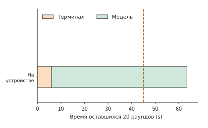
Рисунок 12-28. На устройстве: работа терминала — 6 s, вычисления модели — 58,0 s, всего — 64,0 s. На всех трёх рисунках используется одна линия срока 45 s и одна горизонтальная ось; цвета обозначают суммарное время однотипной работы за двадцать раундов.
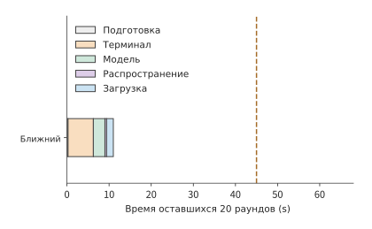
Рисунок 12-29. Близлежащая рабочая станция (RTX PRO 6000): подготовка — 0,27 s, за двадцать раундов терминал — 6 s, модель — 2,7 s, распространение — 0,4 s, передача — 1,6 s, всего — 11,0 s; срок 45 s соблюдён. Пунктирная линия обозначает срок завершения 45 s.
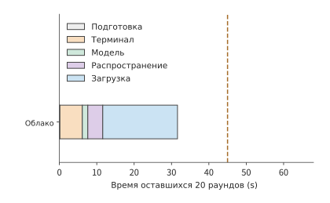
Рисунок 12-30. Облако (H100 SXM): подготовка — 0,14 s, за двадцать раундов терминал — 6 s, модель — 1,5 s, распространение — 4 s, передача — 20 s, всего — 31,6 s. Вычисления выполняются быстрее, но передача занимает больше времени, поэтому этот вариант примерно на 20,6 s медленнее близлежащей рабочей станции, хотя всё ещё укладывается в срок. Пунктирная линия обозначает срок завершения 45 s.
Срок 45 секунд прежде всего исключает выполнение на устройстве: у него наименьшее энергопотребление, но требуется 64,0 секунды. И близлежащая рабочая станция, и облако завершают задачу вовремя, поэтому далее сравнивается энергопотребление: около 1,12 kJ в облаке против примерно 1,81 kJ на близлежащей рабочей станции. Номинальная мощность H100 выше, чем у RTX PRO 6000, но время её занятости на раунд лишь немного превышает половину времени второй карты, поэтому энергопотребление оказывается ниже. Следовательно, среди вариантов, укладывающихся в срок, наименьшее энергопотребление обеспечивает облако.
Для строки выполнения на устройстве также необходимо проверить расход аккумулятора по методике раздела 12.1.5. Следует пересчитать, какую долю одного заряда составляют приведённые в таблице 518–680 J за двадцать раундов. На странице характеристик iPhone 16 Pro указано лишь до 27 часов воспроизведения видео, но не приведена ёмкость аккумулятора в ватт-часах, поэтому используем пересчёт по измерениям MELTing Point: одного заряда хватает примерно на 490–590 промптов, а 20 раундов соответствуют 20 промптам, то есть приблизительно 3,4–4,1% одного заряда.3 Аккумулятор не исключает вариант выполнения на устройстве; его исключает время завершения 64,0 секунды.
Зависимость облачного варианта от скорости исходящего канала можно выразить количественно. Если изменить только скорость исходящего канала облачного маршрута \(b\) в Mbit/s, оставив остальные параметры неизменными, время завершения в облаке составит
11,6 секунды приходятся на однократную подготовку и работу без учёта передачи за двадцать раундов, а 128 Mbit — общий объём передачи двадцати скриншотов. Для соблюдения срока требуется \(b\ge128/33.4\approx3.8\) Mbit/s (рисунок 12-31). Однако облако не может оказаться быстрее близлежащей рабочей станции: даже при мгновенной передаче ему требуется 11,6 секунды, что всё равно больше 11,0 секунды у близлежащей рабочей станции. Причина заключается в 0,2 секунды распространения туда и обратно на каждый раунд: это на 0,1 секунды больше суммы времени распространения и передачи на раунд у близлежащей рабочей станции (0,1 секунды), что превышает экономию модельного времени на H100, составляющую около 0,064 секунды на раунд.
Перед обратным вычислением пороговой пропускной способности необходимо сначала проверить фиксированное время. Если срок равен \(D\), порог в этом случае составляет \(b_{\min}=128/(D-11.6)\) Mbit/s и имеет смысл только при \(D>11.6\) секунды. При \(D\le11.6\) секунды фиксированное время уже полностью исчерпывает срок даже при бесконечной пропускной способности исходящего канала, поэтому конечного порогового значения не существует; нельзя интерпретировать полученный по формуле ноль, отрицательное число или ошибку деления на ноль как допустимую пропускную способность.
Вывод о том, что облако «не догонит» рабочую станцию, зависит от использования нижней границы времени чтения. В эксперименте 8-1 на RTX PRO 6000 измеренное время одного шага декодирования при batch 1 и контексте 8K составило 25,83 ms, что примерно в 2,83 раза превышает нижнюю границу времени чтения 9,12 ms; основная часть разницы приходится на фиксированные накладные расходы каждого шага. Если увеличить время модели на обеих GPU в это число раз, близлежащей рабочей станции потребуется 16,04 секунды, а облаку без учёта передачи — 14,29 секунды; разница составит 1,75 секунды. Только при скорости исходящего канала выше \(128/1.75\approx73\) Mbit/s облако станет быстрее.31
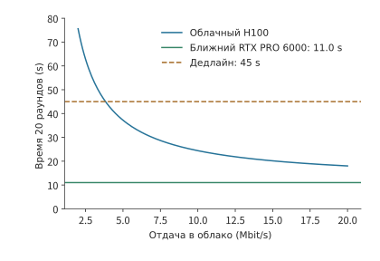
Рисунок 12-31. Исходящий канал облачного маршрута влияет на выбор варианта развёртывания для полной задачи. В каждом из оставшихся 20 раундов передаётся 0,8 MB, подготовка в облаке занимает 0,14 секунды, а вся остальная работа каждого раунда — около 0,57 секунды, поэтому общее время равно 11,6+128/b секунды; близлежащей рабочей станции требуется 11,0 секунды, а срок составляет 45 секунд. В этом примере модель, время обработки и остальные сетевые параметры остаются неизменными, очереди и сбои не учитываются. Примерно с 3,8 Mbit/s облачный вариант начинает укладываться в срок; при дальнейшем росте скорости исходящего канала время облака всё равно не опускается ниже 11,6 секунды, поэтому оно всегда медленнее близлежащей рабочей станции.
При приближении к сроку необходимо также рассчитать, сколько времени остаётся на дополнительные накладные расходы. При исходной скорости исходящего канала 6,4 Mbit/s облачная задача завершается примерно за 13,4 секунды до истечения срока; при снижении скорости до 4 Mbit/s она занимает около 43,6 секунды, оставляя запас лишь примерно 1,4 секунды; при снижении до 3,5 Mbit/s она занимает около 48,2 секунды и уже не укладывается в срок. Если требуется, чтобы 99% задач завершались вовремя, необходимо анализировать распределение вероятностей времени завершения задачи. Поскольку скорость \(b_i\) может различаться между раундами, полное время с учётом передачи следует записать как
Предположим, что в течение передачи каждого раунда скорость постоянна. Средняя скорость для десяти раундов по 6 Mbit/s и десяти раундов по 10 Mbit/s также равна 8 Mbit/s, однако задача займёт около 28,7 секунды, что больше 27,6 секунды при постоянной скорости 8 Mbit/s. Время передачи обратно пропорционально скорости, поэтому дополнительное ожидание в медленных раундах превышает экономию в быстрых. Платформа должна оценивать выполнение условия \(P(T\le45\ \mathrm{s})\ge0.99\) по распределению времени передачи за всю задачу, а также учитывать, что при продолжительном замедлении сети несколько соседних раундов будут затронуты одновременно.
В приведённом выше выборе развёртывания основным фактором является время передачи скриншотов. Для текстовой задачи с меньшим объёмом входных данных и большим числом повторяющихся префиксов акцент оптимизации смещается на повторное использование вычислений. Сохранение состояния сеанса уменьшает объём повторных вычислений. Рассмотрим текстовый сеанс AI-агента: при повторной отправке префикса на каждом раунде общий объём составляет около 66 KB, а после сохранения состояния передаётся лишь около 10 KB; объём каждого ответа в обоих случаях равен примерно 2,5 KB. При скорости 333 Mbit/s сокращение передачи примерно на 56 KB экономит лишь 1,3 ms.30 В отличие от передачи 16 MB скриншотов, основная выгода здесь возникает за счёт уменьшения вычислений префикса.
Объём матричных вычислений в том же сеансе снижается примерно с \(3.0\times10^{14}\) до \(6.0\times10^{13}\) FLOPs. Для облачной H100 SXM при производительности 989,4 TFLOP/s сохранение состояния экономит около 0,239 GPU-секунды. Сохранённое состояние объёмом около 465 MB постоянно занимает видеопамять; если пересчитать это пропорционально его доле в 80 GB видеопамяти H100, каждая секунда хранения эквивалентна занятости \(0.465/80\approx0.0058\) GPU-секунды. Разделив первое значение на второе, получим, что примерно через 41 секунду хранения состояния занятая видеопамять компенсирует сэкономленные в этот раз вычисления. Этот способ расчёта точки безубыточности совпадает со сравнением времени переноса из раздела 12.2.3: выгода от повторного использования должна покрывать стоимость хранения или переноса состояния.
Сохранение состояния уменьшает как повторные вычисления при нормальном выполнении, так и объём повторной работы после сбоя. На примере выбранного облачного варианта сравним стоимость одного и того же разрыва соединения при двух способах сохранения прогресса. Один раунд облачной задачи занимает около 1,57 секунды. Предположим, что десятый раунд уже выполнен, но соединение прерывается до возврата подтверждения, а его восстановление занимает 1 секунду. Если прогресс первых девяти раундов уже зафиксирован, потребуется повторить только неподтверждённый десятый раунд, что добавит около 2,57 секунды и увеличит время задачи с 31,6 до 34,2 секунды. Если нужно повторить все десять раундов, дополнительные затраты составят около 16,7 секунды, и задача займёт 48,3 секунды, превысив срок. Хотя по-прежнему используется тот же сервер, возможность сохранить прогресс определяет, будет ли задача завершена вовремя. Один раунд на близлежащей рабочей станции занимает лишь около 0,54 секунды, поэтому даже при потере прогресса десяти раундов задача займёт только 17,4 секунды; вариант с большим запасом по сроку устойчивее и к сбоям.
На рисунках 12-32 и 12-33 показано различие между двумя способами восстановления: после одного и того же разрыва соединения в одном случае повторяется только последний раунд, а в другом — предыдущие десять раундов. Объём затрат на восстановление прежде всего зависит от того, какие результаты уже надёжно сохранены.
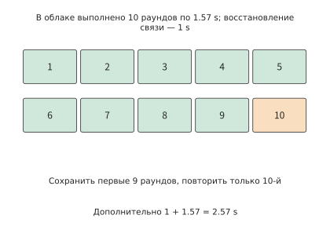
Рисунок 12-32. Записи о фиксации первых девяти раундов сохраняются (зелёный), поэтому повторяется только неподтверждённый десятый раунд (оранжевый). Один раунд в облаке занимает 1,57 s, восстановление соединения — 1 s, что добавляет 2,57 s и увеличивает общее время до 34,2 s. В этом примере используются операции, которые можно безопасно воспроизводить повторно; для уже зафиксированных внешних операций сначала запрашиваются их результаты.
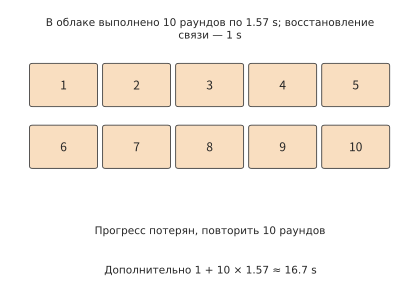
Рисунок 12-33. При потере прогресса десяти раундов после восстановления соединения повторяются десять раундов, что добавляет 1+10×1,57≈16,7 s и увеличивает общее время задачи с 31,6 до 48,3 s, превышая срок 45 s.
Выше сравнивался один уже произошедший разрыв соединения. Чтобы оценить среднюю стоимость большого числа задач, необходимо также учесть вероятность сбоя: повторные попытки тоже увеличивают стоимость. Если попытки независимы, вероятность успеха каждой равна \(p\), после неудачи вся задача выполняется повторно, а каждая попытка стоит \(C\), то ожидаемая стоимость удовлетворяет равенству \(E=C+(1-p)E\), поэтому \(E=C/p\). Вероятности успеха 99% соответствует стоимость около \(1.01C\), а 80% — \(1.25C\). Сохранение прогресса позволяет заменить полный повтор задачи локальным повторным выполнением, непосредственно уменьшая дополнительное время и стоимость каждого сбоя.
12.5.3 Когда необходимо сменить вариант развёртывания¶
С учётом сравнения времени, энергопотребления и восстановления в разделе 12.5.2 в этом примере оставшиеся двадцать раундов следует перенести в облако: задача завершится за 31,6 секунды при энергопотреблении около 1,12 kJ. По сравнению с 70 секундами при продолжении использования исходного сервиса экономия составит около 38,4 секунды. Терминал продолжит сбор данных и выполнение операций, облачная H100 будет отвечать за решения модели, а в каждом раунде будут передаваться только скриншот и результат управления.
Это решение получено последовательным сравнением трёх вариантов развёртывания: выполнение на устройстве сначала исключается из-за превышения срока, а близлежащая рабочая станция и облако укладываются в срок, но облако потребляет меньше энергии. Анализ сжатия, признаков и состояния из разделов 12.1–12.2 также предлагает способы дальнейшего улучшения: сжатие скриншотов уменьшает время передачи, передача полных признаков увеличивает его, а сохранение уже зафиксированного прогресса сокращает повторную работу после восстановления.
| Изменение условий | Результат | Решение |
|---|---|---|
| Скорость исходящего канала исходного облачного маршрута равна 6,4 Mbit/s | Облако: 31,6 s и около 1,12 kJ; близлежащая рабочая станция: 11,0 s и около 1,81 kJ | Оба варианта укладываются в срок; используется облако с меньшим энергопотреблением |
| Скорость исходящего канала облачного маршрута снижается до 3,5 Mbit/s | Облако: около 48,2 s | Облако не укладывается в срок; перейти на близлежащую рабочую станцию |
| Скорость исходящего канала облачного маршрута сколь угодно высока | Облако: не менее 11,6 s | Оно всегда медленнее близлежащей рабочей станции; более строгий срок может соблюсти только близлежащая рабочая станция |
| В облаке происходит один разрыв соединения, прогресс первых девяти раундов сохраняется, а десятый раунд выполняется повторно | 34,2 s | По-прежнему укладывается в срок |
| При том же разрыве соединения теряется прогресс десяти раундов | 48,3 s | Срок превышен; необходимо улучшить механизм сохранения прогресса или перейти на близлежащую рабочую станцию |
Смена устройства во время выполнения задачи также требует переноса состояния сеанса. Для сеанса объёмом 64 MiB из раздела 12.2 требуется около 7,7 секунды подготовки, а каждый раунд ускоряется на 0,4 секунды, поэтому за 20 раундов чистая экономия составляет лишь около 0,3 секунды. Если улучшение пропускной способности продлится только десять раундов, а затем прежние условия восстановятся, такой перенос приведёт к чистой потере около 3,7 секунды. Поэтому платформа должна сопоставлять ожидаемую продолжительную выгоду со стоимостью переключения: переносить состояние следует только тогда, когда ожидаемая экономия времени покрывает подготовку к переносу и оставляет запас на дополнительные накладные расходы. Продолжение работы на одном устройстве в течение некоторого времени позволяет избежать многократных переносов состояния при колебаниях пропускной способности около порогового значения.
В главе 1 по ёмкости, объёму вычислений и времени чтения определялось, способен ли ускоритель разместить модель; в этой главе дополнительно анализируются коммуникация, порядок выполнения и восстановление, чтобы определить, сможет ли вариант развёртывания завершить задачу вовремя. При выборе варианта развёртывания необходимо последовательно ответить на вопросы: какая работа входит в задачу, какие шаги требуют ожидания, какие дополнительные накладные расходы возникнут при фактическом выполнении и какой вариант лучше подходит после изменения условий.
12.5.4 Адаптация системы после изменения ресурсных условий¶
В приведённом выше сравнении развёртываний модель оставалась неизменной, а менялось только место выполнения; если, наоборот, зафиксировать процесс выполнения задачи и ускорять только модель, выгода для полной задачи также будет ограничена. Предположим, что в фиксированной траектории суммарное время работы модели составляет 8 секунд, а неперекрываемое время инструментов, сети и прочих этапов — 2 секунды. Даже при десятикратном ускорении всей модели время задачи сократится лишь с 10 до 2,8 секунды, то есть ускорение составит около 3,57 раза;32 при стремлении времени модели к нулю нижняя граница всё равно равна 2 секундам (рисунок 12-34).
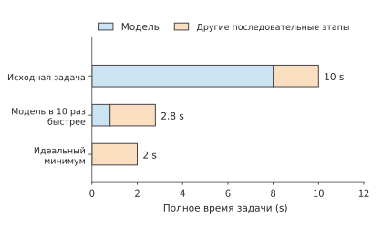
Рисунок 12-34. Предел ускорения в фиксированной траектории задачи. Время модели сокращается с 8 до 0,8 секунды, а остальные последовательные этапы по-прежнему занимают 2 секунды; третья строка показывает идеальную нижнюю границу при стремлении времени модели к нулю.
Чтобы дополнительно сократить оставшиеся две секунды, можно изменить организацию системы. Перенос выполнения на локальное устройство уменьшает число сетевых обменов, а сохранение окружения сокращает ожидание его создания; дополнительное локальное оборудование и постоянно занятое пространство при этом включаются в новый бюджет стоимости. Пример расчёта развёртывания из раздела 12.5.2 уже показывает способ сравнения: сначала находятся варианты, удовлетворяющие требованиям к качеству и сроку, а затем сравнивается полная стоимость выполнения одной задачи.
Тот же подход применяется и при проектировании моделей: переход от DeepSeek V4 к V4.1 представляет собой аналогичную адаптацию на стороне модели. Межслойное совместное использование сокращает дублирование при сохранении глобального KV-кэша и позволяет модели сохранять историческую информацию с более мелкой гранулярностью; CED уменьшает повторное прохождение входных данных через декодер, а восстановление кэша сокращает путь повторного запуска многораундового сеанса.33 Эти изменения воздействуют соответственно на ёмкость, вычисления входных данных и ожидание восстановления, поэтому их можно последовательно учитывать в бюджете одной и той же задачи.
От внутрикристальной памяти до устройства, периферии и облака — проектные решения всегда зависят от понимания полного процесса выполнения. Отношения редукции во внимании позволяют обрабатывать промежуточные матрицы блоками, повторяющаяся структура модели — повторно использовать план выполнения, связи между префиксами и ветвями — совместно использовать контекст, а ожидание инструментов предоставляет время для выгрузки состояния и подготовки окружения. Каждое улучшение использует информацию о модели или задаче, чтобы направлять проектирование других уровней, заново определяя размещение данных, разделение вычислений и способы передачи управления.
Упражнения¶
Упражнения расположены по нарастающей сложности: вычисления, изменение условий и объяснение механизмов. 12-2, 12-3 и 12-7 — основные упражнения. Если не указано иное, числовые значения соответствуют условиям учебных примеров из основного текста.
12-1. Бюджет передачи и вычислений при ретушировании изображений (дополнительное, ★).
(a) Для скоростей исходящего соединения 10, 20 и 100 Mbit/s вычислите время выполнения для трёх вариантов: исходный вариант, десятикратное повышение скорости обработки изображения и уменьшение размера входных данных вдвое. Дополнительное время кодирования и декодирования при сжатии входных данных по-прежнему составляет 0.15 секунды.
(b) Найдите скорость исходящего соединения, при которой сэкономленное благодаря сжатию время передачи в точности равно дополнительному времени кодирования и декодирования. Затем для исходного размера изображения и скорости исходящего соединения 20 Mbit/s рассмотрите следующий случай: из исходных 0.3 секунды обработки ускорить можно лишь 0.2 секунды. Чему будет равно общее время выполнения задачи после десятикратного ускорения этой части?
(c) Разделите изображение на три независимо обрабатываемых блока и изобразите перекрытие загрузки, обработки и обратной передачи. Отметьте этап, который ограничивает дальнейшее сокращение времени выполнения задачи.
12-2. Может ли экономия времени передачи благодаря сжатию снимков экрана компенсировать дополнительные взаимодействия (основное, ★).
(a) Снимок экрана в каждом раунде сжимается с 0.8 MB до 0.2 MB, а дополнительное время кодирования в каждом раунде составляет 30 ms. Повторно вычислите, сколько времени суммарно удастся сэкономить при выполнении задачи из 30 раундов со снимками экрана.
(b) Будет ли задача выполняться быстрее, если после сжатия потребуется 38 раундов? Найдите максимально допустимое количество раундов, при котором вариант со сжатием всё ещё быстрее варианта с 30 раундами и исходными изображениями.
(c) Увеличьте RTT каждого раунда на 100 ms и отдельно вычислите общее время для 30 раундов с исходными изображениями и 38 раундов со сжатыми изображениями. Объясните, почему одно и то же изменение RTT приводит к разному увеличению времени выполнения задачи.
(d) Спроектируйте поля журнала для версии снимка экрана и номера операции. Объясните, как выявлять раунды исправления ошибок, вызванные сжатием, и бесполезные раунды, вызванные устаревшим состоянием.
12-3. Как размещение визуального кодирования и миграция состояния влияют на время взаимодействия (основное, ★).
(a) Изображение занимает 0.8 MB, а после кодирования получается тензор признаков BF16 формы \([400,10240]\). Пропускная способность исходящего соединения составляет 6.4 Mbit/s. Для визуального кодирования требуется 1.31 TFLOPs матричных операций. Локальное кодирование выполняется на RTX 4090, удалённое — на H100 SXM; для обоих вычислите нижнюю границу времени кодирования по пиковой производительности плотных вычислений BF16 (165.2 и 989.4 TFLOP/s). Сравните общее время при локальном кодировании с последующей загрузкой признаков и при загрузке исходного изображения с последующим удалённым кодированием.
(b) Замените канал на один порт ConnectX-7 со скоростью 400 Gbit/s (50 GB/s в каждом направлении). Используя непосредственную загрузку исходного изображения как базовый вариант, вычислите дополнительное время передачи визуальных признаков. Сравните его с разницей времени кодирования на двух картах из пункта (a) и определите, какой фактор теперь задаёт размещение кодировщика.
(c) Для миграции необходимо передать состояние размером 64 MiB со скоростью 80 Mbit/s, а затем потратить 1 секунду на восстановление. После миграции время выполнения каждого раунда сокращается на 0.4 секунды. Найдите чистую экономию времени при оставшихся 10, 20 и 40 раундах. Если время восстановления дополнительно увеличится на 1 секунду, сколько раундов как минимум должно остаться, чтобы окупить затраты времени на миграцию?
(d) Для сохранённых изображения, визуальных признаков и языкового KV отдельно укажите, с какого этапа потребуется начать повторные вычисления. Объясните, как результаты уже отправленных операций должны включаться в процесс восстановления.
12-4. Повторное использование соединения и многопоточная передача (дополнительное, ★).
(a) RTT составляет 200 ms, а задача включает 30 раундов. Каждое установление соединения требует двух дополнительных обменов туда и обратно. Вычислите разницу во времени между созданием нового соединения в каждом раунде и повторным использованием одного соединения на протяжении всей задачи.
(b) Отдельно вычислите суммарное количество переданных байтов изображения, заголовков пакетов и ACK для вариантов с немедленным подтверждением и агрегированным ACK. Объясните, почему при меньшем фактическом количестве переданных байтов время выполнения запроса всё же может оказаться больше.
(c) Сравните приоритетную отправку с доставкой по отдельным потокам на рис. 12-20. В каждом случае укажите, как изменяются периоды использования ресурсов и ожидание зависимостей.
(d) Спроектируйте контрольный эксперимент, в котором изменяется только способ повторного использования соединения, а остальные условия остаются одинаковыми. Перечислите начальные и конечные события, а также промежуточные события, необходимые для объяснения изменения времени.
12-5. Частота ACK и эффективность использования эфирного времени (дополнительное, ★).
(a) Один обмен кадром данных занимает 302 μs, а один обмен кадром подтверждения — 134 μs. Всего происходит 30,800 обменов кадрами данных, и изначально каждый из них подтверждается отдельно. Сколько эфирного времени высвободится после уменьшения количества ACK вдвое?
(b) Изобразите временную шкалу, на которой отправитель приостанавливает отправку в ожидании агрегированного ACK. Объясните связь между высвобождением эфирного времени и более ранней доставкой.
(c) Для воспроизведения PCM требуется скорость 256 kbit/s, фактическая скорость приёма составляет 130 kbit/s, а начальный буфер — 60 ms. Найдите момент опустошения буфера. Сохраняя скорость приёма и начальную длительность аудио 60 ms неизменными, увеличьте частоту дискретизации с 16 kHz до 24 kHz и найдите новый момент опустошения буфера.
12-6. Распределение и резервирование по двум путям (дополнительное, ★).
(a) Данные объёмом 30 MB распределяются между двумя путями со скоростями 20 и 10 Mbit/s. Выведите соотношение распределения, при котором оба пути завершат передачу одновременно, и найдите это время.
(b) Добавьте общий выходной канал со скоростью 24 Mbit/s. Найдите новую нижнюю границу времени передачи и укажите, увеличение пропускной способности какого участка канала позволит снизить эту границу.
(c) Вероятности отказа двух путей доступа равны 0.1 и 0.05, а вероятность отказа общего конечного узла — 0.02. В соответствии с принятым в основном тексте предположением о независимых отказах найдите вероятность того, что задача всё равно завершится неудачно после отправки полной копии по каждому из двух путей. Чему будет равна эта вероятность, если оба пути доступа станут полностью надёжными?
(d) Создайте по одной дополнительной копии каждого из восьми аудиоблоков размером 640 bytes. Найдите дополнительное количество передаваемых байтов и объясните, как получатель должен предотвращать повторное воспроизведение.
12-7. Разделение подготовки соединения, окна и задержки передачи с помощью однофакторных экспериментов (основное, ★★).
(a) Отдельно вычислите отношение медианного времени прямого пути к медианному времени пути Queqiao для двух экспериментов: с созданием нового соединения для каждого запроса и с сохранением соединения после оптимизации. Объясните, какое предсказание следует из гипотезы о том, что «основное различие обусловлено подготовкой соединения и ожиданием отправки».
(b) Пусть объём данных составляет около 355 KB, скорость передачи — 333 Mbit/s, RTT — 200 ms, а время обработки — 30 ms. Найдите идеальное время выполнения. Сравните его с первоначально измеренным временем около одной секунды и оцените, сколько времени ожидания ещё требуется объяснить.
(c) Спроектируйте однофакторный эксперимент с размером окна. Объясните, как следует чередовать запуски с разными конфигурациями окна и какой объём данных в пути, какие ACK и какую временную последовательность отправки необходимо наблюдать, чтобы подтвердить гипотезу о том, что окно ограничивает скорость передачи.
(d) Используя сопутствующую аудиозапись, изобразите моменты времени от генерации одного блока до его воспроизведения. Объясните, как различить несвоевременную генерацию, задержку передачи и ожидание локального планировщика.
12-8. Как пропускная способность исходящего соединения и восстановление после сбоя изменяют время и энергопотребление при межрегиональном размещении (дополнительное, ★★).
(a) Повторно вычислите время и энергопотребление для оставшихся двадцати раундов при трёх вариантах размещения. Затем найдите пропускную способность исходящего соединения, необходимую облачному варианту для завершения в срок, и объясните, почему при любом дальнейшем её увеличении облачный вариант всё равно не сможет догнать ближайшую рабочую станцию.
(b) Измените условия на десять оставшихся раундов и срок 23 секунды. Выберите вариант, который укладывается в срок и потребляет меньше всего энергии. Затем сократите срок до 15 секунд и сделайте выбор заново.
(c) В двадцати раундах взаимодействия скорость исходящего соединения для десяти раундов составляет 6 Mbit/s, а для остальных десяти — 10 Mbit/s. Найдите общее время облачного варианта, сравните его со случаем постоянной скорости 8 Mbit/s и объясните разницу.
(d) Для задачи из десяти раундов со сроком 23 секунды предположите, что соединение разрывается сразу после выполнения восьмого раунда, а его восстановление занимает 2 секунды. Рассмотрите два варианта восстановления: прогресс первых семи раундов сохранён, поэтому требуется повторить только восьмой раунд; прогресс всех первых восьми раундов потерян, поэтому их требуется повторить полностью. Вычислите время завершения оставшейся работы и общее время всей задачи в обоих случаях.
В этом пункте предполагается только разрыв соединения с удалённым сервисом; вариант выполнения на конечном устройстве продолжает работать нормально. Во время разрыва удалённый сервис сохраняет рабочее состояние, которое продолжает использоваться после восстановления соединения, поэтому повторная подготовка не требуется. Прогресс задачи восстанавливается отдельно в соответствии с двумя описанными вариантами. Для повторяемых раундов необходимо ещё раз учесть энергопотребление модели. Заново выберите вариант с минимальным энергопотреблением, укладывающийся в срок.
12-9. Бюджет пропускной способности, ёмкости и энергопотребления конечного устройства (дополнительное, ★).
(a) Для четырёх каналов LPDDR5X x16 со скоростью 10.6 Gbit/s на контакт найдите суммарную пропускную способность. Затем для одного запроса Qwen3-8B BF16 с 8K decode, где на каждом шаге считывается 15.14 GB весов и 1.21 GB KV, найдите нижнюю границу времени шага и верхнюю границу token/s.
(b) После квантования весов в q4_0, при котором каждые 32 значения уменьшаются с 64 bytes до 18 bytes, повторно вычислите нижнюю границу времени шага и верхнюю границу token/s. Для телефона с 12 GB памяти, из которых 4 GB зарезервированы, найдите оставшееся после вычета весов пространство, количество помещающихся запросов с контекстом 8K и максимальное количество токенов контекста одного запроса.
(c) При энергопотреблении 0.576–0.756 J на токен и предельной продолжительной мощности 13.8 W найдите диапазон верхней границы token/s, обусловленной только ограничением мощности. Сравните его с ограничениями пропускной способности для BF16 и q4_0 и укажите, какое ограничение срабатывает первым.
12-10. Потери пакетов, повторная передача и избыточность кодирования (дополнительное, ★★).
(a) При MSS 1,448 bytes и RTT 0.2 s найдите верхнюю границу Mathis для вероятностей потери пакета 14% и 3.6%, а также время, необходимое только для отправки 354,640 bytes при обеих верхних границах.
(b) Каждый из 245 пакетов независимо теряется с вероятностью 14%. Найдите ожидаемое количество потерянных пакетов. В каждом раунде для идеальной выборочной повторной передачи используется один RTT, а повторно передаваемый пакет снова теряется с вероятностью \(p\). Поэтому количество раундов отправки, необходимое каждому пакету, имеет геометрическое распределение с вероятностью успеха \(1-p\), а вероятность доставки всех 245 пакетов за \(n\) раундов равна \((1-p^n)^{245}\). Последовательный бюджет составляет 238.5 ms, а каждый дополнительный раунд добавляет один RTT. Найдите математическое ожидание времени выполнения, а затем получите p99 по 99-му процентилю распределения количества раундов.
(c) Сколько восстановительных пакетов требуется для каждой из двух вероятностей потери при целевой вероятности успеха 99.9% и какова соответствующая доля избыточности? Найдите время выполнения с учётом избыточности и сравните его с соответствующим p99 повторной передачи.
(d) Объясните, почему долю избыточности следует изменять в зависимости от измеренной вероятности потери пакетов, а не фиксировать на уровне 25.7%: рассмотрите как невозможность достичь целевой вероятности успеха, так и напрасный расход пропускной способности отправки.
Итоги главы¶
Полное взаимодействие следует анализировать на трёх уровнях. Сначала по объёму данных, объёму вычислений и расстоянию передачи определяют время, необходимое для каждого этапа. Затем с учётом зависимостей выполнения выясняют, какие затраты времени нужно складывать, а какие этапы могут перекрываться. Наконец, учитывают соединения, окна, конкуренцию и восстановление, чтобы объяснить фактическое время ожидания. Завершение обработки изображения за 12,8 секунды, последовательная обработка блоков аудио и накопление задержки по раундам агента показывают, как взаимодействуют эти три уровня. Для вычислений на конечном устройстве применяется тот же подход: пропускная способность памяти задаёт верхнюю границу количества токенов в секунду, объём памяти определяет допустимые размеры модели и контекста, а энергопотребление и ёмкость аккумулятора — продолжительность работы.
Распределение задач между моделями меняет форму и количество передаваемых между устройствами данных. Перенос вычислений на конечное устройство может привести к замене компактного изображения более объёмными признаками, а распределение модели между несколькими устройствами — к замене одной передачи послойной синхронизацией. При сравнении сначала исключают одинаковые для обоих вариантов затраты времени, а затем сопоставляют сэкономленное время вычислений с дополнительным временем связи — так можно определить источник выигрыша.
Повторное использование позволяет распределить однократные затраты на подготовку между последующими вызовами. Для миграции, предварительного прогрева соединения, компиляции графа и сохранения состояния можно, исходя из стоимости подготовки и экономии времени при каждом вызове, определить минимальное количество использований, при котором это становится выгодно. Кроме того, часть ожидаемой экономии времени или средств следует зарезервировать на издержки, вызванные колебаниями и восстановлением.
При проектировании экспериментов также можно использовать ту же временную модель. Зафиксируйте входные данные и границы измерения времени, регистрируйте ожидание на каждом этапе, а затем поочерёдно изменяйте настройки и проверяйте, можно ли объяснить изменение общего времени изменениями на конкретных этапах. Корректировка базового варианта Queqiao демонстрирует этот процесс: после того как оптимизация устранила большую часть дополнительного ожидания, для дальнейшего повышения производительности необходимо сократить время распространения сигнала. Потеря пакетов также не обязательно означает перегрузку: на маршруте со случайными потерями оценка пропускной способности по потерям пакетов занижает доступную скорость примерно на три порядка. Только непосредственное измерение пропускной способности с последующим подбором избыточности кодирования по измеренной доле потерь позволяет приблизить время завершения к бюджету последовательного выполнения.
При окончательном выборе сначала следует обеспечить качество и соблюдение сроков, а затем сравнить стоимость. Даже если средней скорости вычислений и передачи достаточно, задача всё равно может не уложиться в срок из-за медленных раундов или потери достигнутого прогресса. Поэтому вероятность своевременного завершения и объём повторной работы после восстановления являются составными частями модели развёртывания.
Вернёмся к применению моделей, представленному в главе 1: разработчик выражает задачу через контекст, а система выполнения на его основе планирует вычисления, сохраняет состояние и передаёт данные. Теперь сохранение фрагмента истории, добавление ветви-кандидата, предварительная подготовка окружения инструментов и миграция сеанса имеют отслеживаемую стоимость в ресурсах. Понимание этой стоимости позволяет выявлять, какие общие накладные расходы выполнения можно устранить с помощью информации приложения, и выбирать реализацию с учётом качества решения задачи, времени завершения и общей стоимости. Именно в этом заключается навык системного проектирования, который даёт изучение AI-инфраструктуры.
-
Описание Snapdragon 8 Elite и описание пятого поколения: поддерживаются LPDDR5X с частотой до 5,300 MHz и ёмкостью до 24 GB, ширина шины не указана. Страница продукта Micron LPDDR5X: максимальный класс скорости — 10.7 Gbit/s, стандарт JEDEC предусматривает одноканальное устройство x16, техпроцесс 1γ добавляет варианты ёмкости 6, 12 и 24 GB, также существует устройство на 16 GB для флагманских телефонов; страница продукта Samsung LPDDR5X также указывает максимум 10.7 Gbit/s. Страница характеристик Apple iPhone 16 Pro не раскрывает ёмкость и скорость памяти. ↩↩
-
Разделение бюджета шины и энергопотребления конечного устройства: учитываются четыре канала x16 (
declared_phone_channels_x16=4; в описании SoC ширина шины не указана), скорость на контакт соответствует поддерживаемым SoC 10.6 Gbit/s, суммарная пропускная способность — 84.8 GB/s; объёмы непосредственно считываемых весов 15,136,819,200 bytes и KV 1,207,959,552 bytes взяты из результатов 8K decode для одного запроса. ↩↩ -
MELTing Point: оценка языковых трансформеров на мобильных устройствах, arXiv 2403.12844, §5.2.2 и таблица 5 приложения: 0.16, 0.20 и 0.21 mWh на токен; максимальная продолжительная мощность iPhone 14 Pro составляет 13.8 W, мгновенная превышает 18 W, а продолжительная мощность Galaxy S23 остаётся ниже 8.5 W; на iPhone 14 Pro Zephyr-3B q4_k достигает 14.8 token/s, а Llama-2 7B q3_k — 6.0 token/s; на одном заряде можно выполнить 490.05–590.93 промпта, для S23 — 542.78. Построчная сверка извлечённых значений приведена в таблице извлечения числовых значений. ↩↩↩↩
-
Mathis и др., «Макроскопическое поведение алгоритма предотвращения перегрузки TCP», ACM CCR 1997. Формула (3): \(BW=(MSS/RTT)\cdot C/\sqrt{p}\); при периодических потерях и подтверждении каждого пакета \(C=\sqrt{3/2}\approx1.22\), при случайных потерях — 1.31; формула (4) задаёт более простую верхнюю границу. ↩
-
Управление перегрузкой BBR, черновик IETF draft-cardwell-iccrg-bbr-congestion-control-02: BBR.max_bw — максимальное значение недавних выборок пропускной способности в окне, BBR.min_rtt — минимальная выборка RTT в окне, а BBR.bdp — их произведение; коэффициент pacing на этапе Startup равен \(4\ln2\approx2.77\), cwnd_gain — 2, коэффициент pacing на этапе ProbeBW_UP — 1.25. ↩
-
Расчёты для потери пакетов 14% и потери пакетов 3.6%. Параметры пути взяты из записи пути Queqiao: время туда и обратно 199–207 ms, порог насыщения пропускной способности около 333 Mbit/s, потери пакетов в направлении загрузки из Irvine в Guiyang около 14% (в другой период — 3.6%), нулевая потеря среди 41,663 пакетов из Guiyang в Irvine, MSS 1,448 bytes, размер фиксированного файла 354,640 bytes; время модели взято из раздела повторных измерений с фиксированным файлом и составляет около 30 ms, что согласуется с измерениями: если вычесть из оптимизированной медианы 236.5 ms минимальное время туда и обратно за тот же период 197 ms и время отправки 8.5 ms, время модели не превышает примерно 31 ms; приведённое выше значение 38 ms получено в раннем тесте с чередованием восьми файлов; размер символа FEC равен MSS, целевая вероятность успешного восстановления блока — 99.9%. Модель повторной передачи использует одну идеальную выборочную повторную передачу в каждом раунде, не учитывает уменьшение окна и повторную передачу по тайм-ауту и потому представляет собой благоприятную для TCP нижнюю границу. ↩↩↩
-
Пример и бюджет условий для ретуширования RAW-изображения. В примере размер исходного изображения составляет 30 MB, готового изображения — 5 MB, а обработка изображения занимает 0.3 секунды. ↩
-
Результаты двух расчётов для трёх блоков составляют соответственно 12.8 s и 12.36 s; в основном тексте разница около 0.4 s используется для объяснения выигрыша от перекрытия. Дополнительный предварительный просмотр требует дополнительного кодирования и передачи. Источники: барьер целого изображения, независимые блоки и дополнительный предварительный просмотр. ↩
-
Расчёт временной последовательности аудиоблоков. В этой упрощённой модели входные кадры однозначно соответствуют выходным аудиоблокам, что используется для объяснения зависимостей поблочной обработки и последовательного воспроизведения. ↩
-
Фиксированная форма визуальных данных и полный расчёт EC/KV, пример размещения этапов мультимодальной обработки. Фиксированный визуальный вариант, DeepStack и языковое состояние измеряются отдельно. ↩
-
Расчёты для размещения кодирования на конечном, периферийном и облачном уровнях: объём матричных операций визуального кодирования взят из результатов визуального кодирования одного изображения, пиковые значения — из таблицы параметров оборудования; техническое описание ConnectX-7: скорость одного порта достигает 400 Gbit/s. ↩
-
Эксперимент с кодированием Qwen3-VL-8B на CPU и передачей по локальному TCP. Входными данными служит синтетическое тестовое изображение 256×256, полный EC занимает около 2 MiB, PNG — около 3.4 KiB; данные до и после восьми передач побитово совпадают. Кодирование завершается до начала измерения передачи, поэтому указанное время относится к этапу передачи признаков. ↩
-
Расчёт объёма обмена данными для каждой операции Qwen3-8B с TP=2, PP=4. В каждом из 36 слоёв выполняются две редукции выходных данных, что в сумме даёт 72 запуска обмена данными; дополнительные обмены создают эмбеддинги, активации этапов, logits и возврат токена. ↩
-
RFC 9000: транспорт QUIC, §2, §7, §9, §13; RFC 9001: TLS; RFC 9114: HTTP/3; RFC 9221: ненадёжный Datagram. HTTP/3 определяет передачу запросов и ответов HTTP поверх QUIC. ↩↩
-
Точное разбиение даёт 25,685 пакетов при загрузке и 4,281 пакет при скачивании; всего передаётся 29,966 пакетов данных и столько же ACK, фактический объём сетевой передачи составляет 39,554,832 bytes, а полный ответ занимает 14.36339008 s. Источник: полный замкнутый цикл для эталонного изображения. ↩
-
При одинаковых условиях заполнения вариант с немедленным ACK даёт 39,555,120 bytes и 14.52103724 s, а вариант с агрегированным ACK — 38,177,328 bytes и 14.564459796 s; разница составляет около 1.38 MB и 43.4 ms. Источники: контрольный вариант NewReno с немедленным ACK, контрольный вариант с агрегированным ACK и запись этапа управления CUBIC. ↩↩
-
FIFO и приоритет аудио; полная упорядоченность и доставка по отдельным потокам при фиксированной записи отправки. Отдельно исследуется влияние планирования отправки и зависимостей доставки на стороне получателя. ↩
-
Передача по локальному TCP/HTTP3 и многопоточная передача HTTP3 через одно соединение. ↩
-
Расчёт изображения для общего эфирного времени. Для данных и MAC ACK используются скорости OFDM 54 и 6 Mbit/s соответственно, агрегация кадров не применяется; ожидание доступа равно SIFS 16 μs плюс два слота по 9 μs, то есть DIFS 34 μs для 802.11a OFDM, случайная отсрочка не учитывается; подтверждения на уровне MAC и сквозные подтверждения измеряются отдельно. ↩
-
Новая золотая эпоха компьютерных сетей, часть 3, где описывается исторический контекст TACK, Link Turbo и размещения прокси. ↩↩
-
Расчёт смешанной обратной связи при приоритизации мультимедиа и агрегированном ACK, а также контрольные варианты FIFO и немедленного ACK в том же каталоге. Время обработки моделью и запланированные моменты воспроизведения заданы условиями примера. ↩
-
Эксперимент с двумя процессами и двумя TCP-соединениями: два пути передачи имитируются двумя процессами и двумя TCP-соединениями; 30 основных попыток включают случаи отказа общего конечного узла. ↩
-
Назначение системы и мотивация межцентровой передачи описаны в фиксированном архиве Queqiao README, соответствующем коммиту GitHub
496ca627; дата обращения: 2026-09-10. Описание системы основано на этой версии, а данные сравнения производительности — на коммите168ff4b. ↩ -
Запись пути из фиксированного архива и запись проектных решений из коммита
168ff4b. Файлы, параметры оптимизации, а также начальные и конечные точки измерения времени соответствуют определениям исходной записи. ↩↩ -
p50 прямого пути и Queqiao при создании нового соединения равны 1185.3 и 301.6 ms, а при сохранении оптимизированного соединения — 240.9 и 236.5 ms; отношения двух пар медиан составляют приблизительно 3.93 и 1.019. Если сначала вычислять отношение времени каждого раунда, а затем брать медиану, результаты составят соответственно 3.96 и 1.03. Источник: статистика Queqiao при одинаковых условиях. ↩
-
В восьми тестах полного приёма полученный PCM и PCM, прочитанный обратным вызовом воспроизведения, побитово совпадают; суммарно в течение 360–1440 ms обратный вызов воспроизведения не мог получить достаточное количество аудиосэмплов. В эксперименте использовалось устройство вывода тишины, а журнал содержит события приёма и обратного вызова воспроизведения. Ещё три запроса были отменены до первого обратного вызова воспроизведения; полученные байты, события закрытия соединения и удалённый EOF фиксируют процесс отмены. Полные данные четырёх раундов приведены в описании сопутствующих свидетельств. Источник: аудиоэксперимент с явной привязкой физического интерфейса, фиксированный коммит
496ca627, базовый вариант включает адаптацию привязки сокета. ↩ -
Обсуждение межоблачных сетей и Regionless приведено в «Новой золотой эпохе компьютерных сетей, часть 2». В вариантах регионального размещения этой главы стоимость измеряется энергопотреблением устройства и временем GPU. ↩
-
При воспроизведении одной и той же модели, последовательности токенов и раундов объёмы данных, переданных серверу, составляют соответственно 66,207 и 10,193 bytes, а объёмы данных, возвращённых клиенту, в обоих случаях равны 2,527 bytes. Объёмы матричных операций составляют соответственно 296,505,803,538,432 и 60,380,764,176,384 FLOPs; нижняя граница времени GPU получается делением на пиковую производительность плотных вычислений BF16 H100 SXM. Размер состояния составляет 465,371,136 bytes; время его резидентного хранения пересчитывается с учётом его доли в 80 GB видеопамяти, и примерно через 41.0 s оно компенсирует сэкономленные 0.239 секунды GPU. Источник: региональное размещение для фиксированной траектории агента; байты и токены взяты из исходной траектории. ↩
-
Расчёты для трёх уровней: конечного, периферийного и облачного. Объём чтения на каждом шаге для весов и KV взят из строки результатов 8K decode для одного запроса; веса переупаковываются в q4_0 из расчёта 18 bytes на каждые 32 значения; параметры шины телефона взяты из разделения бюджета шины и энергопотребления конечного устройства; пропускная способность, пиковая производительность плотных вычислений BF16 и номинальная мощность — из таблицы параметров оборудования; измеренный коэффициент — из строки batch 1, 8K в таблице эффективности эксперимента 8-1. Файл результатов также содержит все варианты для десяти раундов, сокращённого срока и восстановления после разрыва соединения. ↩↩
-
Подробный пересчёт и программа вычислений для сравнения условий этой главы. ↩
-
Официальный технический отчёт DeepSeek V4.1, разделы 1, 2, 3 и 6; фиксированные условия и повторный расчёт для межглавной сессии. ↩